Overview
Barcode Input options within the DataWedge profile specify the device hardware to use for scanning and the decoders to be applied on the acquired data before sending it for processing. Decoders supported by DataWedge are explained below, including commonly used decoders: Code39, Code128, Datamatrix, DotCode, EAN13, OCR A, OCR B, PDF417, QRCode, UPCA, and UPCE. DataWedge also provides audio and other feedback to alert the user of scanning results and barcode type. See the Scanner Parameters section for more information.
Barcode Input is used to specify:
- Device cameras
- 1D and 2D and imagers
- Laser-based barcode scanners
- Bluetooth-connected scanners
- USB synchronous serial interface (SSI) scanners
Barcode Scanner Input reads data from the integrated barcode scanner built into the device, or attached via cable or Bluetooth connection, or implemented as a snap-on module. DataWedge supports lasers, imagers and internal cameras. The raw barcode data that's acquired is processed or formatted as using the Basic and Advanced Data Formatting Processing options that are found near the Output options.
The parameters of this feature can be configured using the Set Config API.
Scanner Selection
In Barcode Input, the Scanner selection panel determines which scanning device to use for data capture. The list of available scanners is based on devices present in (or connected to) the unit being configured.

|
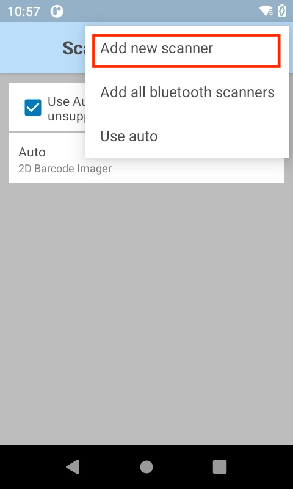 | 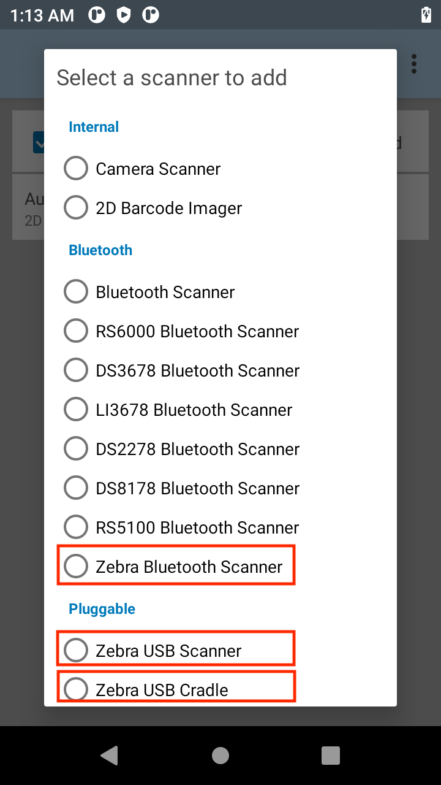 |
Scanner Selection
Auto is the default scanner selection, which automatically determines the best scanning device from the list of available devices based on the following auto scanner selection rules:
- If a Zebra Scan Module or Scan/MSR Module is installed, the 2D imager is selected.
- If no Scan Module is installed, the camera is selected.
- When the camera is selected, scanning is performed with the rear-facing camera.
- When 2D Imager is selected, scanning is performed using the installed Scan or Scan/MSR module.
Generic scanner selection for Zebra Bluetooth Scanner and Zebra USB Scanner: Newly released Zebra Bluetooth or USB scanners are automatically supported (in SSI mode), but the specfic scanner model names may not be visible in the Scanner selection list yet. In this case, selecting either Zebra Bluetooth Scanner or Zebra USB Scanner can be used as a generic option to scan from each respective peripheral device. The availability of the scanner model name being listed relies on the operating system build (BSP) - see Feature Matrix for version compatibility and the Zebra Support Portal to download the latest build.
NOTE: For select Zebra devices with Android 11 or higher, the scanner framework design from v36.8.10.0 onwards extends support to include Zebra Bluetooth Scanner option as the standard scanner selection for all Zebra Bluetooth handheld scanners (e.g. DS3678, LI3678, DS8178). As a result, consider the following:
- When Zebra Handheld Bluetooth is selected on a device and the DataWedge profile is imported into one of the select Zebra devices, the import fails. Instead, the setting must be manually configured on the select device through the DataWedge UI by choosing Zebra Bluetooth Scanner under Scanner Selection.
- When an app uses a DataWedge intent API that references a Bluetooth handheld-specific scanner identifier (e.g.
BLUETOOTH_DS3678,BLUETOOTH_DS2278) on the select Zebra device, the identifier is no longer recognized. Instead, the app must be updated to useBLUETOOTH_ZEBRAas the identifier.
Select Zebra Android devices affected by the scanner framework design change:
- ET40 / ET45
- ET60 / ET65
- TC15
- TC22 / TC27
- TC53 / TC58
- TC73 / TC78
- TN28
Zebra USB Cradles supports Bluetooth scanners paired/connected to its USB cradle, connected to a workstation cradle with an Android device inserted. This permits the Bluetooth scanner to scan data into the Android device inserted in the workstation cradle.
Multiple scanner support provides the capability to use more than one scanner interchangeably in the same DataWedge profile without the need for manual configuration, such as when an internal scanner and an external Bluetooth scanner is required. Additionally, each scanner can be individually configured within the same profile. To add a scanner, in the Scanner Selection screen tap the top right menu and select Add new scanner. A list of available scanners is displayed.

|
Add new scanner
Select the scanner to add from the list. The selected scanner is then added to the Scanner Selection list. 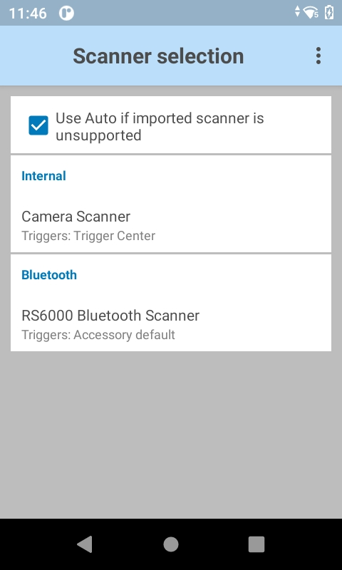 Selected scanner listed
If Scanner selection is set to Auto, all scanners are removed from the list.
Long pressing on the scanner category in the Scanner Selection screen displays a menu with options to Configure triggers or Delete. Tap on Configure Triggers to display a list of triggers to configure; the options vary depending on the device in use.
| 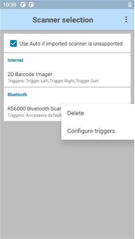 |
Add new scanner
If an external scanner and an internal scanner is selected (regardless of the order added), the internal scanner is given all the triggers by default. The user needs to select the triggers for the external scanner as required. Once a trigger or multiple triggers are assigned to the external scanner, those triggers are removed from the internal scanner. If an external scanner is removed from the scanner selection, the internal scanner is given all the triggers again. If an attempt is made to assign a trigger that is already assigned to a different scanner category, the following message is displayed:
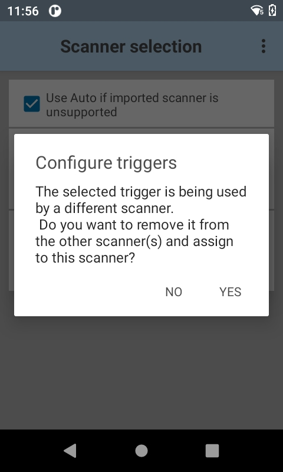 Configure trigger warning
Note: Use of multiple scanners with multiple Android user accounts may result to unexpected behavior.
Bluetooth SSI Scanners
DataWedge supports the following Zebra Bluetooth SSI scanners:
- DS2278 Bluetooth Scanner
- DS3678 Ultra-Rugged Scanner
- DS8178 Bluetooth Scanner
- LI3678 Ultra-Rugged Laser Scanner
- RS507 Cordless Ring Scanner
- RS5100 Bluetooth Wearable Scanner
- RS6000 Ring Scanner
- RS6100 Bluetooth Wearable Scanner
Bluetooth scanners are supported according to the following rules:
- To initially configure the RS507 in a Profile, the scanner must be paired and connected.
- After initial configuration, a Bluetooth scanner can be enabled and disabled in the Profile, even if it is disconnected from the device. However, to configure decoders, reader parameters and other scanner settings, a Bluetooth scanner must be connected.
- DataWedge does not automatically reconnect to a Bluetooth scanner if that scanner is connected while DataWedge is using a different auto-selected scanner. To re-enable a Bluetooth scanner, connect the scanner and select it in the Profile or re-choose the "Auto" selection option.
- Auto-selection and Battery Swap - If Scanner selection is set to Auto and an RS507 was enabled prior to a battery swap, DataWedge continues working with that RS507 scanner upon reconnection after a battery is swapped. If the RS507 does not reconnect after the swap, DataWedge reverts to the current default scanner.
- Keep Enabled on Suspend - This mode is supported on Bluetooth and pluggable scanners, and might result in faster battery drain than would otherwise be expected while in suspend mode. Note: The Zebra computing device wakes from suspend mode when pressing the scan trigger of any supported scanner.
USB SSI Scanners
DataWedge supports the following Zebra USB SSI scanners:
- DS2208 USB SSI Scanner
- DS3608 USB SSI Scanner
- DS4608 USB SSI Scanner
- DS8108 USB SSI Scanner
- DS9308 USB SSI Scanner
- DS9908 USB SSI Scanner
- FS40 USB Fixed Industrial Scanner (SSI Mode) - Requires custom firmware; please contact your Zebra account team.
- LI3608 Ultra-Rugged USB SSI Laser Scanner
- RS4000 USB SSI Ring Scanner
- RS5000 USB SSI Ring Scanner
Support notes:
- Scanners must be configured using SSI over USB CDC.
- The scanner connects via one of the following: workstation docking cradle or USB port and cable.
Important: Support for decode parameters can vary depending on the scanning device selected. For device-specific support notes, please refer to the Integrator Guide that accompanied the unit.
USB SSI Cradles
DataWedge supports the following Zebra USB cradles with Bluetooth scanner for barcode scanning in SSI mode:
| Cradle/Scanner | Minimum Firmware Version |
|---|---|
| STB3678 (cradle) | PAACNS00-005-R00 |
| CR2278 (cradle) | PAADNS00-001-R04 |
| CR8178 (cradle) | PAACYS00-006-R02 |
| DS3678 (scanner) | PAACKS00-010-R00 |
| DS2278 (scanner) | PAADFS00-002-R05 |
| DS8178 (scanner) | PAACXS00-007-R01 |
DataWedge supports the following Zebra Android devices to connect to the supported USB cradle (Scanner framework version 32.7.31.0 or later is required on the Android device):
- EC50 / EC55
- ET51 / ET56
- L10AW
- TC52AX
- TC52 / TC57
- TC52X / TC57X
- VC8300
The proper setup and configuration is required for connection to be established.
USB Cradle and Scanner Configuration
The Zebra USB cradle and scanner must be in “SSI over USB CDC” mode to work with DataWedge.
Follow the steps below:
Power the Zebra USB cradle by connecting it to any PC.
Pair/Connect the Bluetooth scanner by scanning the pairing barcode printed on the USB cradle.
Scan the “SSI Over USB CDC” barcode with the Bluetooth Scanner:

The Bluetooth scanner automatically restarts.
Both scanner and USB cradle are now in SSI over USB CDC mode.
Setup and Connect with Android Device
Connect the Android device to the Bluetooth scanner via USB cradle:
- Power on the supported Zebra Android device.
- Insert the device into the workstation cradle which supports USB connection and is connected to a power supply.
- Insert one end of the ethernet cable into the USB cradle.
- Insert the other end of the cable (USB) to the workstation cradle. The green LED lights up on the USB cradle.
- Pair/connect the supported Bluetooth scanner to the USB cradle by scanning the Bluetooth pairing barcode printed on the USB cradle. The scanner connects to the USB cradle.
Scanning can now be performed with the Bluetooth scanner for the results to output to the Android device. The Scanner Selection in DataWedge automatically selects Zebra USB Cradle. If scanning with DWDemo, press the hard trigger button on the Bluetooth scanner or press the soft trigger button from the DWDemo app to start scanning.
Note: The steps above must be followed in order. If the scan application is opened before pairing/connecting the Bluetooth Scanner with the USB cradle, scanning will not work.
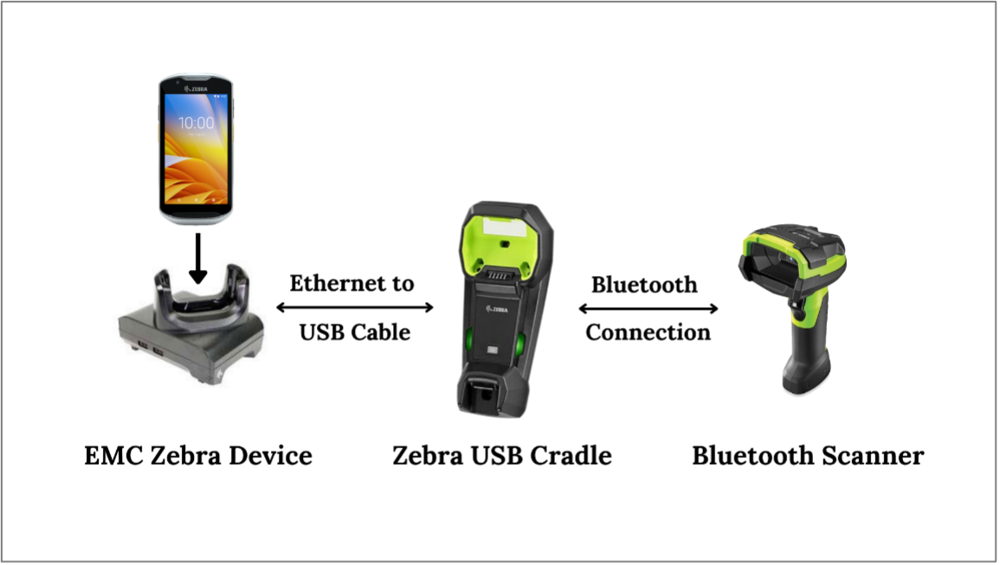
Connectivity between the Zebra Android device, USB cradle and Bluetooth scanner
Hardware Trigger
This feature configures DataWedge to enable/disable use of the device hardware trigger for barcode input. The hardware trigger is enabled by default. If disabled, the scan beam does not appear when pressing the hardware trigger. However, the scan beam can still be activated by using the Soft Scan Trigger DataWedge API intent. This feature allows application programmers to enforce the use of app-specific features when scanning barcodes and documents within their app.
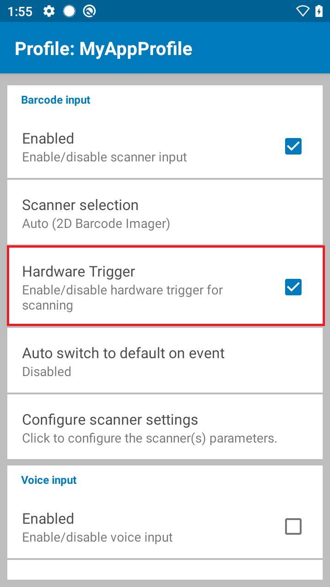
Note: When the hardware trigger is disabled, it cannot be used to trigger the scan beam. If scanning is initiated by the soft scan trigger API intent, a hardware trigger press cancels the beam.
Auto Switch to Default on Event
This feature configures DataWedge to select an external scanner as the default scanning device immediately upon connection and revert to a built-in scanner when the external scanner is disconnected. External scanners include those connecting by Bluetooth, serial cable or snap-on module. If enabled, SWITCH_SCANNER should not be used upon scanner connection/disconnection as it can cause unexpected behavior. Disabled by default. Available only when “Auto" is selected in the Scanner selection panel.
This feature is intended to help reduce scanning workflow interruptions when a Bluetooth scanner is introduced and/or it becomes disconnected by losing power or moving out of range.
For Bluetooth scanners, if the device was not previously paired, a pairing barcode is displayed prior to automatic connection.
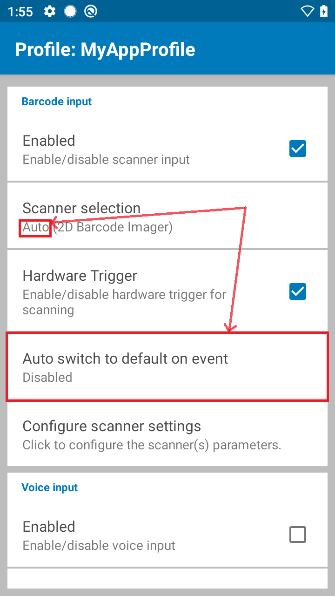
"Auto switch to default on event" is available only when "Auto" is selected.
Available Options:
- Disabled - No scanner switching occurs when an external scanner is connected or disconnected (default).
- On connect - Selects the external scanner as the default scanning device immediately upon connection.
- On disconnect - Reverts to a built-in scanner based on its position in an internally managed scanner list (which varies by host device). This is usually the scanner most recently used prior to the external connection (see notes below).
- On connect/disconnect - Selects an external scanner as the default scanning device immediately upon connection. Upon disconnection, reverts to the scanner set as the default prior to the external connection.
Notes:
- The system selects the default scanner based on the connection state and the scanner's position in an internally managed scanner list. If the newly connected scanner is lower in the scanner list than the one currently selected as the default scanner, the newly connected scanner becomes the default scanner.
- On devices with only one built-in scanner or imager, "On disconnect" reverts to that built-in scanner or imager.
QR Code Launch Options
QR Code launch options enable/disable a web URL to be launched from the default browser when the URL is decoded from a QR code barcode. To enable this feature from the home screen, the “Launcher” DataWedge profile must be configured. Requirements:
- The Scanning Mode must be set to Single.
- The QR code must contain a valid, single URL that starts with "http" or "https" and contains no other data.
- The selected scanner must support QR code scanning, otherwise the QR Launch option cannot function.
If the first 2 requirements are not met, the scanned data is dispatched to the application without opening the URL.
| 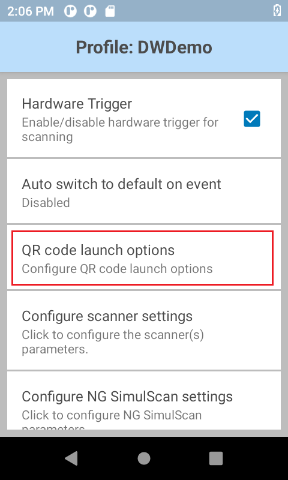 | ||
| Enable QR code to open URL | QR code launch options |
Available options:
Launch QR codes - configures the Datawedge profile to enable or disable (default) the ability to open a URL when scanning a QR code. If enabled, the scanned barcode must be of type QR code and must contain a valid URL for the default browser to open the URL. Otherwise, scanned data is dispatched to the application. Launch QR codes must be enabled for the following options:
Enable only QR code decoder - if enabled (disabled by default), it decodes only QR code barcodes, and if it contains a valid URL, the URL is launched in the browser - all other decoders selected within the profile are disregarded. By restricting decoding to only QR barcodes, this eliminates the need to deselect other decoders that may be selected in the profile. If disabled, other decoders in addition to QR codes can be scanned, but only QR codes with a valid URL can launch the URL in the browser.
Show URL popup - if disabled, when a QR code containing a valid URL is scanned, the default browser immediately launches and opens the URL. If enabled (by default), when a QR code barcode containing a valid URL is scanned, a popup appears prompting the user to decide whether or not to open the URL based on the following selection:
• Yes - the default browser launches and opens the URL.
• No - the URL is not opened and the scanned data is dispatched to the application.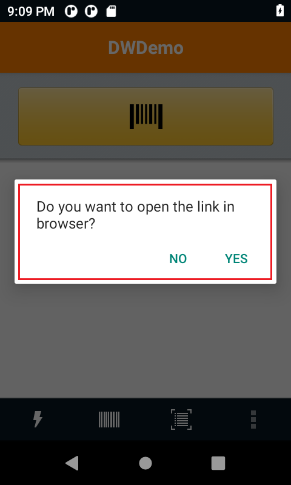
QR code popup message
Configure Scanner Settings
Configure scanner settings option is accessible through the DataWedge profile settings. It configures the scanner parameters specifying how the barcode is scanned, including the selected scanner (e.g. camera, 2D Imager, Bluetooth scanner, etc.), decoder, decoder parameters, reader params and scan params. Refer to the corresponding sections below on each option for further information.
 Profile settings
Profile settings
Tap Configure scanner settings. A list of scanner configuration settings appears.
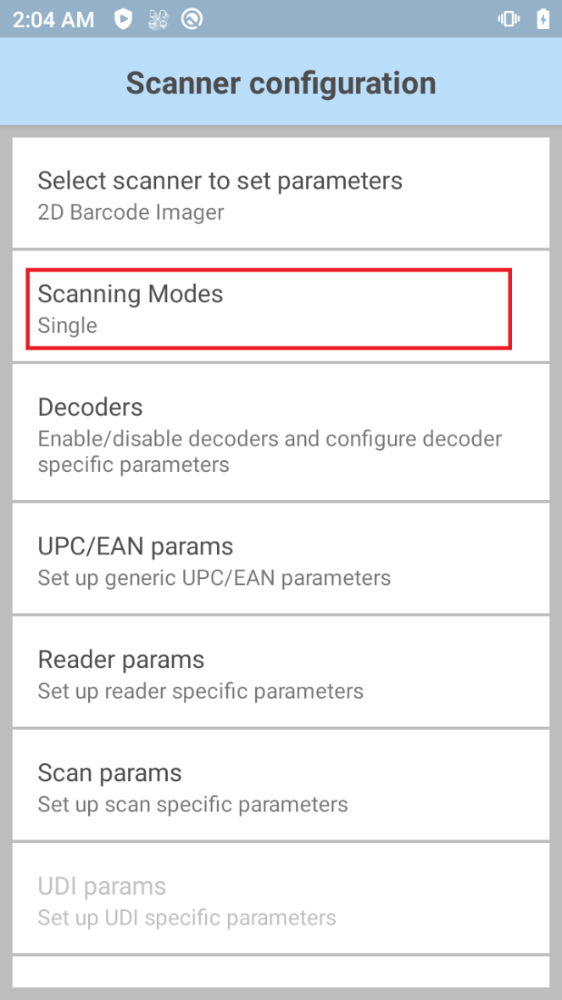 Scanner configuration
Note: The Configure scanner settings option is still accessible even when the selected scanner in Scanner Selection is disconnected. In previous DataWedge versions prior to 6.8, all the scanner parameters (decoders, decoder params, etc.) are grayed-out and inaccessible.
Scanning Modes
Scanning Modes is used to select the mode to scan barcodes:
- Single - Normal mode to scan an individual barcode
- UDI - Scan Unique Device Identification (UDI) barcodes such as GS1, HIBCC and ICCBBA. To successfully decode GS1 DataMatrix, ensure that GS1 DataMatrix is disabled in the Decoders section. This is required due to a limitation in the UDI architecture.
- Disabled – When a scanning mode, such as MultiBarcode or Document Capture, is selected in the NG SimulScan Configuration screen, scanning mode in this section is automatically disabled, preventing any other selection.
Scanning Modes exists within both Scanner Configuration and NG SimulScan Configuration sections. The availability of Scanning Modes options is interdependent on the option selected within each section:
- If Single or UDI is selected as the Scanning Mode within Scanner Configuration, then Scanning Modes is disabled within NG SimulScan Configuration.
- If Document Capture or MultiBarcode is selected for Scanning Modes within NG SimulScan Configuration, then Scanning Modes is disabled within Scanner Configuration.

|

|
Scanner Configuration - Scanning Modes
Global Scanner Configuration
Global scanner configuration (All Scanners) allows users to specify a generic scanner configuration applicable for all supported scanners. Rather than specifying multiple individual configurations for each separate scanner within a given DataWedge profile, the global configuration setting is provided to configure multiple scanners in a single profile.
Global scanner configuration (All Scanners) displays all scanner parameters and values for each and every scanner even if not supported by a specific scanner. Since this list is all-inclusive, there is a possibility a particular parameter or value may not be supported on an individual scanner. In this case, an error is logged in logcat during scanning.
When global scanner configuration (All Scanners) is enabled, access is still available to settings specific to individual scanners, such as the option “Keep enabled on suspend” (which specifically applies to Bluetooth and other peripheral scanners), even if the default scanner is selected as an internal scanner for “Scanner Selection” (See Figure 1). When applying configurations, if any of the global settings are not applicable to the specific scanner, those settings cannot apply and will be disregarded.
When a global setting is configured and then an individual scanner is configured, both configuration options are saved. The configurations will be applied in the following order:
- The global configuration is applied.
- The specific scanner configuration is applied.
If reports are generated when the global scanner configuration is set, the values supported by the connected device will be returned.
Configuration
Open a profile in DataWedge. The "Barcode input" section contains the option "Configure scanner settings".
Note: The “Configure scanner settings” option is still accessible even when the selected scanner in “Scanner Selection” is disconnected. In previous DataWedge versions prior to 6.8, all the scanner parameters (decoders, decoder params, etc.) are grayed-out and inaccessible.
Profile settings
Tap "Configure scanner settings". A list of scanner configuration settings appears.
Scanner configuration
Tap "Select scanner to set parameters". All Scanners option is available to enable global scanner configuration, allowing the scanner settings to apply to all scanners.
Global scanner configuration
Select All Scanners. A confirmation message appears indicating that any setting changes moving forward will be applicable to all scanners as a common global configuration. Any existing individual scanner setting will be replaced by this global setting. The scanner does not need to be connected to the device in order to configure the settings in the global scanner configuration.
Using Intents
Set the global scanner configuration by setting the value of parameter configure_all_scanners to "true" via SET_CONFIG intent API.
NextGen SimulScan Configuration
NextGen (NG) SimulScan Configuration is configuration transferred from legacy SimulScan Input of DataWedge previously deprecated. NG SimulScan is a data capture solution for retrieving data from documents, forms, and labels by scanning barcodes or capturing partial or entire documents as images. Not all legacy SimulScan features are available - migration of these features into NextGen SimulScan is a continuous effort. Currently, the following features are part of NextGen SimulScan:
- MultiBarcode - acquires multiple, unique barcodes from a form in a single scan session and delivers the data either immediately or after a specific requirement is met - the number of barcodes scanned either reaches a specified quantity of barcodes or falls within a specified barcode quantity range. Options are configured directly within DataWedge in MultiBarcode Params. Supported since DataWedge 8.0. A template is not required for this MultiBarcode feature (This is not to be confused with the MultiBarcode subfeature that is part of Document Capture, which does require a template.) This applies to the following use cases:
- Any Barcode, Fixed Barcode Quantity - forms or labels have the same number of barcodes and no unique criteria to distinguish between each one.
- Any Barcode, Variable Barcode Quanitity - forms or labels may not follow a specification or quantity of barcodes, and/or their unique criteria varies. Define the range for the quantity of barcodes to capture and the timeout value that applies to your use case.
- Document Capture - retrieves data from documents, forms, and/or labels by scanning barcodes or capturing partial or entire documents as images based on a template created from NG SimulScan Template Builder. Document Capture, which includes MultiBarcode as a subfeature, requires the NextGen SimulScan template, also known as a Document Capture template. (This MultiBarcode subfeature should not be confused with the MultiBarcode feature in the previous bulletpoint, which does not rely on a template.) After creating the template with the appropriate configurations, it is imported into DataWedge. Supported since DataWedge 8.0 and only available on select devices and scanners, see Feature Matrix. The MultiBarcode subfeature applies to the following use cases:
- Specific Barcodes, Fixed Field Presence - specific types of barcodes are present in each label or form. Use the template to define the unique criteria to capture the specific barcodes.
- Specific Barcodes, Variable Field Presence - specific barcodes can be uniquely defined, but their presence may vary from label to label. Use the template to define if a field is "mandatory" - if not present, the decode does not take place.
- Auto Group Identification - applies when barcodes share a common pattern (based on symbology, starting characters or data length), allowing the decoded data to be automatically grouped when the pattern is detected. The quantity of barcodes must be defined.
For Zebra Professional Series devices, such as TC21 and TC26, NextGen SimulScan requires a Mobility DNA Enterprise license. The following message is displayed when attempting to access this feature on a device without a valid license:
 License required on Zebra Professional devices
License required on Zebra Professional devices
See DataWedge Licensing for more information.
To access NextGen SimulScan Configurations:
In the DataWedge profile, tap Configure NG SimulScan settings. 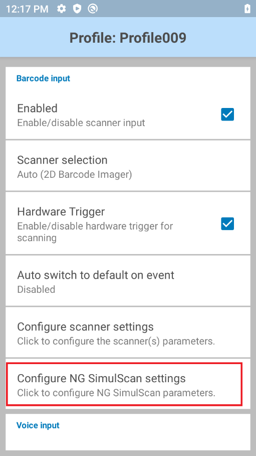 DataWedge profile displaying NG SimulScan
The NG SimulScan configuration screen appears with options similar to Configure scanner settings. NextGen (NG) SimulScan configuration
Aside from Scanning Modes, Document Selection and MultiBarcode Params, all other options are common to those displayed under Configure scanner settings. Refer to the corresponding sections below on each NG SimulScan Configuration option for further information.
Scanning Modes
Scanning Modes selects the mode to scan barcodes:
- MultiBarcode - multiple barcodes read in a single scan. A template is not required.
- Document Capture - capture fields within a document or capture the entire document as an image based on a template created from NG SimulScan Template Builder. Support for this feature depends on the hardware and operating system version. Refer to the Feature Matrix table for more information.
- Disabled – when a scanning mode, such as Single or UDI, is selected in the Scanner Configuration section, scanning mode is automatically disabled in NG SimulScan Configuration, preventing any other selection.
Scanning Modes exists within both Scanner Configuration and NG SimulScan Configuration sections. The availability of Scanning Modes options is interdependent on the option selected within each section:
- If Single or UDI is selected as the Scanning Mode within Scanner Configuration, then Scanning Modes is disabled within NG SimulScan Configuration.
- If Document Capture or MultiBarcode is selected for Scanning Modes within NG SimulScan Configuration, then Scanning Modes is disabled within Scanner Configuration.

|

|
NextGen (NG) SimulScan - Scanning Modes
Document Selection / Document Capture
Document Selection specifies the template to use for Document Capture to retrieve data from documents, forms, and labels by scanning barcodes or capturing partial or whole documents as images. The template is generated from NG SimulScan Template Builder and is used to process the acquired data so it can be consumed by an application. Document Capture must be selected as the Scanning Mode. There are 2 types of Document Capture templates:
- Image Capture - captures images of whole documents or forms, while optionally capturing elements within the form, including barcodes and photos, and detects for signatures in the same session.
- MultiBarcode - acquires data from forms that contain barcodes. Applies to cases where multiple barcodes are required to be captured simultaneously, or a specific barcode(s) needs to be read from a multitude of barcodes. Barcodes captured include any barcode (no barcode criteria defined), specifically defined barcodes (based on unique criteria defined) and groups of common barcodes (shared pattern detected in barcodes based on defined criteria) even when the quantity or presence of a barcode(s) changes from label to label.
See Document Capture Programmer's Guide for instructions on how to retrive data from a form using Document Capture.
See Template Builder for instructions on how to create a Document Capture/NextGen SimulScan Template. After creating the Template, copy it to the device.
To select the Document Capture/NextGen SimulScan Template, in the NG SimulScan configuration screen tap on Document Selection and select a template for the document to be captured (see screen capture below). This selection is populated after importing the template. With Document Capture, it is required to Use content providers to retrieve scanned data.
| 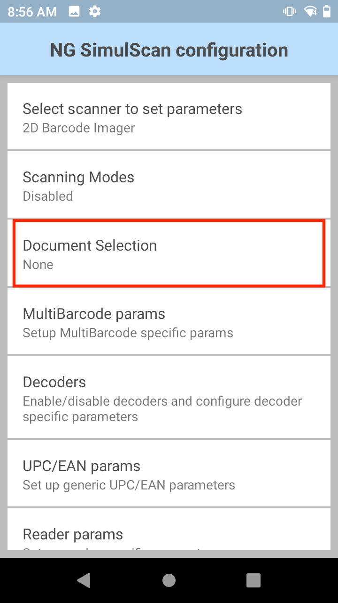 | ||
| Document Capture template selection | Default templates related to Whole Document |
The following subsections highlight a few different types of Document Capture Template options based on the defined template:
A) Anchor Barcode
Document Capture with Anchor Barcode captures fields within a document as images, such as an address or signature, based on the barcode in the NG SimulScan Template that determines the position of the fields being captured. Applies to Image Capture template type. Once properly configured, scan the anchor barcode to capture the specific area as image. Different fields in the document can be captured in separate images. This is useful in situations such as delivery operations, to capture the address and signature in delivery forms as separate images for proof of delivery.
Document capture with anchor barcode demonstration
B) Whole Document
Whole Document Capture acquires the entire document, or form, as an image based on the surrounding borders of the content defined in the NG SimulScan Template Builder. Applies to Image Capture template type. The entire document can be captured with or without scanning a barcode. The document must have black borders surrounding all four sides or be bordered by a contrasting background, otherwise the document cannot be captured.
Two templates are available by default:
- WholePage-MandatoryBarcode - Used to capture any form or document that has at least one barcode present, which can be located anywhere in the form or document.
- WholePage-OptionalBarcode - Used to capture any form or document that may or may not have a barcode. If a barcode is present, it can be located anywhere in the form or document. Since the document is scanned as soon as it is detected by DataWedge, the resulting scanned image may become blurry. For better image quality, change the Aim Type to Press and Sustain in the Reader Params section.
Whole document capture demonstration
C) Signature Presence Detection
Detect the presence of a handwritten signature when scanning a document with Document Capture. This feature is useful particularly for delivery or courier services to automatically check if a signature is missing, rather than manually performing the check. The NG SimulScan Template is required to designate the region on the form used to identify the location of the signature to detect its presence. Applies to Image Capture template type. Signature presence detection is controlled through the Content Provider. See Content Provider programmer's guide for more information.
Signature presence detection demonstration
D) Read Specific Barcode
Read Specific Barcode decodes a particular barcode among a multitude of barcodes based on unique criteria defined in NG SimulScan Template. Applies to MultiBarcode (as part of Document Capture) template type. The criteria to capture the barcode is defined in the NextGen SimulScan Template. See Template Builder for more information and instructions on how to create the template. The criteria to read specific barcodes is based on the following options selected during template creation. Any combination of these options can be used. If more than one barcode is present that matches the given criteria, then the option Automatic Group Identification, described in the following section, can be used instead.
Barcode Type – Specifies the barcode type or decoder as defined in the template.
Character Checking (Begins with) – Specifies the specific character the barcode must begin with in order to decode, as defined in the template. Some common specifications:
○ N - (e.g.: NXXXXXX) for advice note number
○ P – (e.g.: PXXXXXX) for part number
○ Q – (e.g.: QXXXXXX) for quantity
○ V – (e.g.: VXXXXXX) for vendor IDCharacter Checking (Contains characters at a given location in the string) – Specifies the character(s) at a given position in the decoded string which the barcode must contain, as defined in the template.
Barcode Data Length – Specifies the length of the barcode string to decode, as defined in the template.
Multiple Character Checking (Begins with) – Specifies the acceptable characters for the barcode string to begin with, as specified in the template. For example, if “A” and “B” is specified, then only barcodes that begin with “A” or “B” are decoded.
Fixed Field Presence (Mandatory Barcode) – applies to forms that contain mandatory barcodes to decode, as specified in the template. If the mandatory barcode is not present, the decode does not take place. This applies to cases where there is common criteria across all forms and each barcode (mandatory) is present from form to form. The common criteria is specified in the template and includes barcode type and/or character checking, such as "begins with" or character count. If more than one barcode meets the specified criteria, the first barcode decoded is returned.
NG SimulScan Template: Specific Barcode - Fixed Field Presence NG SimulScan: Specific Barcode - Fixed Field Presence demonstration
Variable Field Presence (Mandatory + Optional Barcode) – applies to labels that contain a combination of mandatory and optional barcodes to decode. Mandatory barcodes share common criteria across all labels and each mandatory barcode is present from label to label. The common criteria is specified in the template and includes barcode type and/or character checking, such as "begins with" or character count. A barcode can be designated as mandatory, in which the scan session times out if the specific barcode is not scanned, or optional (non-mandatory), in which the scan session proceeds even if the specific barcode is not scanned.
- If the mandatory barcode is present, the barcode is decoded. If the optional barcode is also present, both barcodes are decoded.
- If the mandatory barcode is not present, the scan session times out and the barcode is not decoded.
NG SimulScan Template: Specific Barcode - Variable Field Presence NG SimulScane: Specific Barcode - Variable Field Presence demonstration
E) Auto Group Identification
Auto Group Identification processes barcodes from a document or label that share a common pattern, automatically grouping the decoded data when the pattern is detected. A common use case includes scanning serial numbers from bulk packs of a product, where serial number identifiers and the quantity of items in the bulk packs change from label to label. Applies to MultiBarcode (as part of Document Capture) template type. DataWedge identifies barcodes that belong to the group by looking for a pattern in each barcode data based on the following criteria defined in NG SimulScan Template (all criteria must be met; see Template Builder for more information and instructions on how to create the template):
- Same barcode symbology
- Same first 1-2 Characters of the barcode data
- Same barcode data length
Introduction to Read Specific Barcodes and Auto Group Identification features
When using this option, the quantity of barcodes must be specified by using one of the following methods based on how the quantity is defined - whether with the presence of a “quantity” barcode (Quantity Barcode) or specified by the user or system (User/System Defined):
- Quantity Barcode – Based on the template, a separate barcode is present on the form or label specifying the quantity of barcodes to scan for each decode session. The decoded data from the Quantity barcode must meet at least one of the following criteria:
- Starts with "Q" or "q"
- Length is 3 digits or less
- User/System Defined - Set the quantity of barcodes (value range: 1 to 100; default value: 5) to scan based on:
- DataWedge UI - use option User-defined Barcode Quantity under Template params from NG SimulScan configuration, as shown below.
- DataWedge intent API - use SetConfig to set
common_barcode_dynamic_quantityto the desired quantity.
| 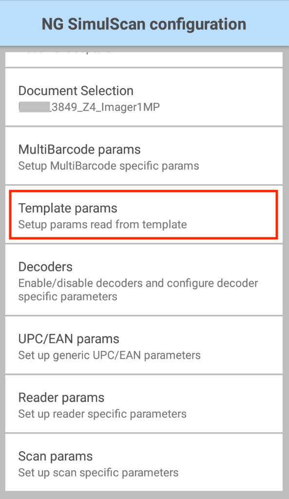 |
Set barcode quantity for Auto Group Identification
| NG SimulScan template: Auto Group Identification | NG SimulScan: Auto Group Identification Demonstration |
MultiBarcode Params
MultiBarcode acquires multiple, unique barcodes from a form in a single scan session and delivers the data either immediately or after a specific requirement is met - the number of barcodes scanned either reaches a specified quantity of barcodes or falls within a specified barcode quantity range. Duplicate barcodes are decoded only once. An NG SimulScan template is not required. (This is not to be confused with MultiBarcode that is a subfeature of Document Capture, which does require the NG SimulScan template.) MultiBarcode must be selected as the Scanning Mode under NG SimulScan Configuration.

|
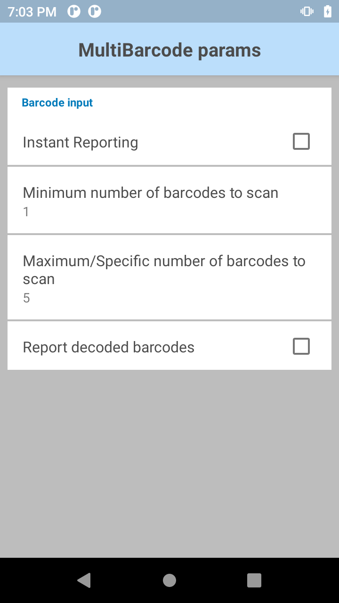 |
MultiBarcode params
To configure MultiBarcode params:
Instant Reporting - Enable/Disable immediate reporting of unique barcodes within a scan session. As each barcode is decoded, feedback is provided and decoded data is reported individually. The user must press and hold the trigger to initiate scanning, then release the trigger to stop scanning. This applies to workflows where there may be a delay scanning multiple barcodes in the same scan session - with Instant Reporting there are no timeouts that could lead to missed scans e.g. when walking around pallets. Duplicate barcodes are ignored. If barcode separators are designated to be output (using IP Output or Keystroke Output) for multibarcodes, these separators are not added - by design, the barcodes are output one at a time.
- If enabled, it ignores the value from Maximum/Specific number of barcodes per scan and immediately reports the scanned data. Instant Reporting overrides Report decoded barcodes.
- If disabled (default), the decoded data is returned as a single entity after reaching the Maximum/Specific number of barcodes per scan.
NG SimulScan: Instant Reporting configuration NG SimulScan: Instant Reporting demonstration
Minimum number of barcodes per scan - Represents the lower limit for number of barcodes to scan in a single scan session if Report decoded barcodes is enabled. Barcode data is decoded only if the number of barcodes scanned is between the range of Minimum number of barcodes to scan and Maximum/Specific number of barcodes to scan. Only applies to integrated imagers, not external scanners (e.g. RS5100 ring scanner).
Maximum/Specific number of barcodes per scan - Only applies to integrated imagers, not external scanners (e.g. RS5100 ring scanner). - Variable barcode quantity - Decodes barcodes when the number of barcodes scanned is within range of the minimum and maximum quantity specified. This applies when barcodes vary from label to label - the labels do not follow a specification nor specific quantity of barcodes, such as labels from different manufacturers that use different barcode identifiers. Report decoded barcodes must be enabled. Barcode data is decoded only if the number of barcodes scanned is between the range of Minimum number of barcodes to scan and Maximum number of barcodes to scan. The maximum limit is 100.
- _Fixed barcode quantity -_ Decodes barcodes when the number of barcodes scanned reaches the specified quantity. This applies when the same number of barcodes are expected from label to label and no unique criteria exists to distinguish between each barcode. **Specific number of barcodes per scan** represents the specific quantity of barcodes to be decoded in a single scan session. **Report decoded barcodes** must be disabled. **_Data is returned only after the specified number of barcodes is read._** If the specified number of barcodes is not initially in view of the scanner, the scanner does not decode any data. If the scanner's field of view contains a number of barcodes greater than the specified quantity, the scanner returns the decoded data in the order they were decoded (randomly) until the specified number is reached. For example, if the count is set to 2 and 8 barcodes are in the field of view, the scanner decodes the first 2 unique barcodes it reads, returning the data in random order. If there are less than 2 barcodes in the field of view, a timeout occurs.NG SimulScan: Variable barcode quantity configuration NG SimulScan: Variable barcode quantity demonstration NG SImulscan: Fixed barcode quantity configuration NG Simulscan: Fixed barcode quantity demonstration Report Decoded Barcodes - Allows reporting of decoded barcode data in a single scan session irrespective of the specified Maximum/Specific number of barcodes per scan.
- If disabled (default), the decoded data is returned as a single entity only after reaching Maximum/Specific number of barcodes per scan.
- If enabled, the decoded barcodes are reported as a single entity when the number of barcodes scanned is between the range of Minimum number of barcodes per scan and Maximum/specific number of barcodes per scan. Consider the following behavior when Report decoded barcodes is enabled: - If Continuous Read is also enabled, continuous reading of barcodes does not work. - If Instant Reporting is also enabled, Instant Reporting takes higher priority.
NG SimulScan: Report decoded barcodes configuration NG SimulScan: Report decoded barcodes demonstration
MultiBarcode Notes:
- Acquired data from all barcodes is delivered as a single string when output as keystrokes. To add separators and adjust output order, see the Keystroke Output guide.
- MultiBarcode supports a maximum data size of 64 KB.
- Picklist behavior - If the Picklist parameter is set to “Disabled,” the device will attempt to scan the number of barcodes specified in the MultiBarcode params screen. If the Picklist parameter is set to a value other than “Disabled," the user is expected to move the cross-hair to each barcode to be scanned. Data is returned only after the specified number of barcodes is read.
- Multiple barcode types - Multiple barcode types (decoders) can be acquired in the same scan session. For example, if the specified quantity for a MultiBarcode scan is four, two barcodes can be barcode type Code 128 and the other two can be type Code 39.
- If both Continuous Read and Instant Reporting parameters are enabled, Instant Reporting takes precedence over Continuous Read, which is ignored.
- If the Beam Timer expires during any of the scan sessions prior to meeting the specific criteria (e.g. minimum/maximum number of barcodes), the scanned data is not reported.
Barcode Highlighting
Barcode Highlighting provides on-screen feedback when scanning with a camera or imager by highlighting barcodes based on defined rules. Create rules to highlight barcodes and specify which barcodes are reported. This feature guides the user to identify which barcodes are being captured, or aid in finding items. Barcode Input must be enabled for Barcode Highlighting to function.
Video introducing and demonstrating the use of Barcode Highlighting
| Example of barcodes highlighted based on barcode data and rules applied |
Enable Barcode Highlighting |
Barcode Highlighting parameters:
- Barcode Highlighting Rules - highlight barcodes based on the specified conditions and actions from the rules created. Applies only to highlighting; rules for decoding are specified in the Report Data Rules option.
- Report Data Rules - decode barcodes based on the specified conditions and actions from the rules created.
See Barcode Highlighting Programmer's Guide for guidance to implement barcode highlighting within an app.
Barcode Highlighting Rules
Barcode Highlighting Rules specify the conditions and actions to highlight barcodes seen in the preview screen. Available options:
- Conditions - define the conditions in which the rule should be applied. At least one condition should be defined, otherwise all barcodes are highlighted:
- Identifier:
• Min Length - specifies the minimum length of the scanned barcode
• Max Length - specifies the maximum length of the scanned barcode
• Contains - the scanned barcode must contain the specified characters
• Ignore Case Sensitivity - if enabled, the scanned data is not case-sensitive and does not need to match the letter case of the string in the Contains field. If disabled, the scanned data is case-sensitive and the letter case must match the characters in the Contains field. - Symbology - select the barcode symbology or symbologies to scan
- Identifier:
- Actions - define the action to take when the condition is met:
- Fill Color - select the color used to highlight the scanned barcode
To create a Barcode Highlighting Rule:
- Enable Barcode Input and Barcode Highlighting.
| 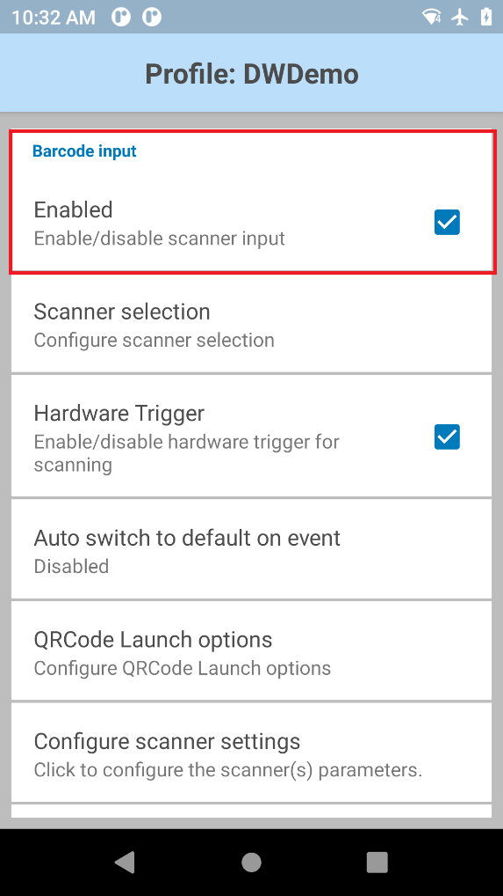 |
Tap on the ellipsis (...) next to Barcode Highlighting to open Barcode Highlighting Parameters. 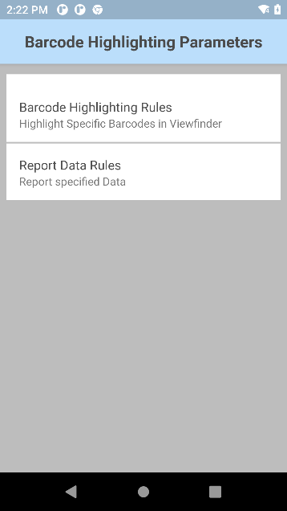
Tap Barcode Highlighting Rules.
Tap on the hamburger icon in the top right and tap New Rule.

Enter a name for the new rule.
Tap OK. The new rule appears.
Tap on the rule.
Tap Conditions to specify the conditions for the rule to take into effect.
Tap Identifier.
Specify the appropriate settings as desired: 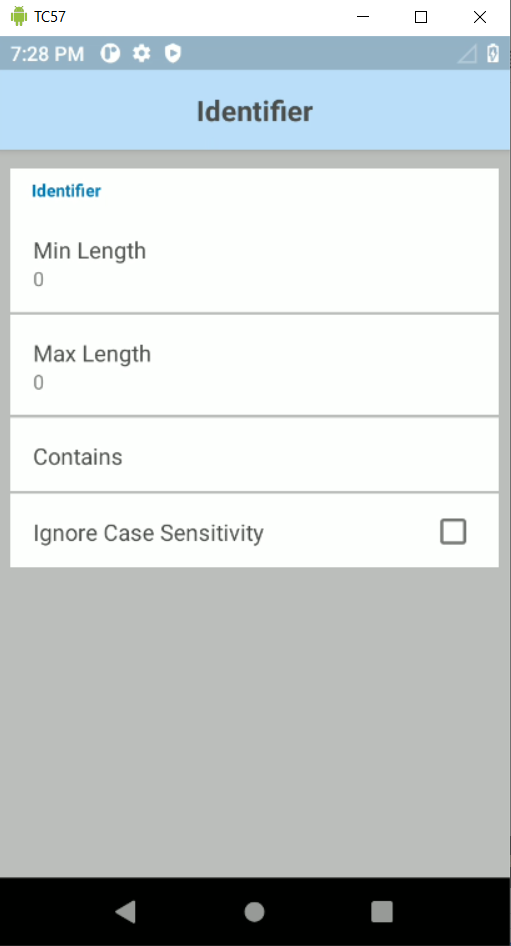
Tap the back button.
Tap Symbology.
Select the desired symbology to scan. 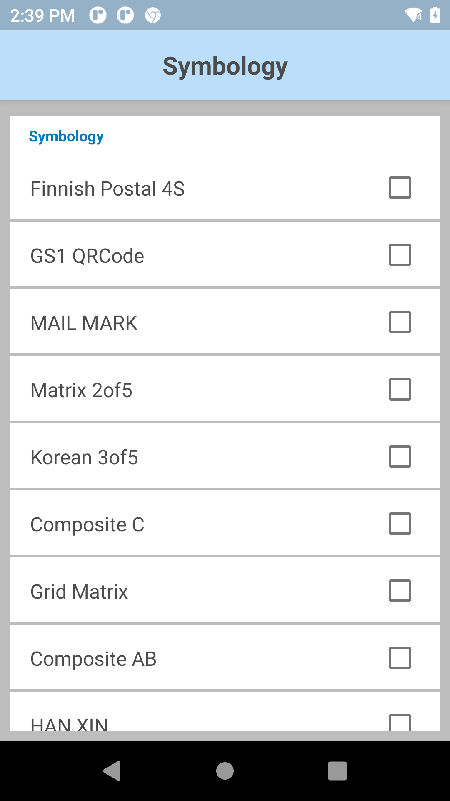
Tap back until the screen appears displaying the rule.
Tap Actions.
Tap on the hamburger icon in the top right and tap New Action. 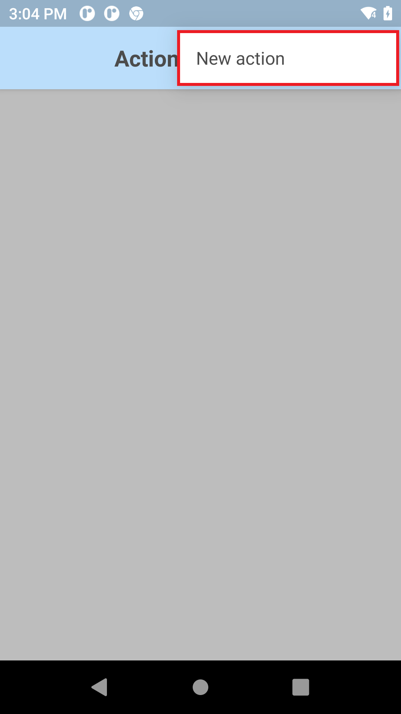
Tap Fill Color to select the new action to create.
The new action is listed. Tap Fill Color.

Pick the color desired and adjust the transparency setting as needed via the sliding bar.
Tap OK.
The chosen color is displayed in the Fill Color rule preview.

Report Data Rules
Report Data Rules specify the conditions and actions to decode a highlighted barcode. Available options:
- Conditions - define the conditions in which the rule should be applied:
- Identifier:
• Min Length - specifies the minimum length of the scanned barcode
• Max Length - specifies the maximum length of the scanned barcode
• Contains - the scanned barcode must contain the specified characters
• Ignore Case Sensitivity - if enabled, the scanned data is not case-sensitive and does not need to match the letter case of the string in the Contains field. If disabled, the scanned data is case-sensitive and the letter case must match the characters in the Contains field. - Symbology - select the barcode symbology or symbologies to scan
- Identifier:
- Actions - define the action to take when the condition is met:
- Report - decode the barcode based on the Conditions specified
To create a Report Data Rule:
- Enable Barcode Input and Barcode Highlighting.
Tap on the ellipsis (...) next to Barcode Highlighting to open Barcode Highlighting Parameters.
Tap Report Data Rules.
Tap on the hamburger icon in the top right and tap New Rule.
Enter a name for the new rule.
Tap OK. The new rule appears.
Tap on the rule.
Tap Conditions to specify the conditions for the rule to take into effect.
Tap Identifier.
Specify the appropriate settings as desired:
Tap the back button.
Tap Symbology.
Select the desired symbology to scan.
Tap back until the screen appears displaying the rule.
Tap Actions.
Tap on the hamburger icon in the top right and tap New Action.
Tap Report to decode the barcodes based on the Conditions specified. 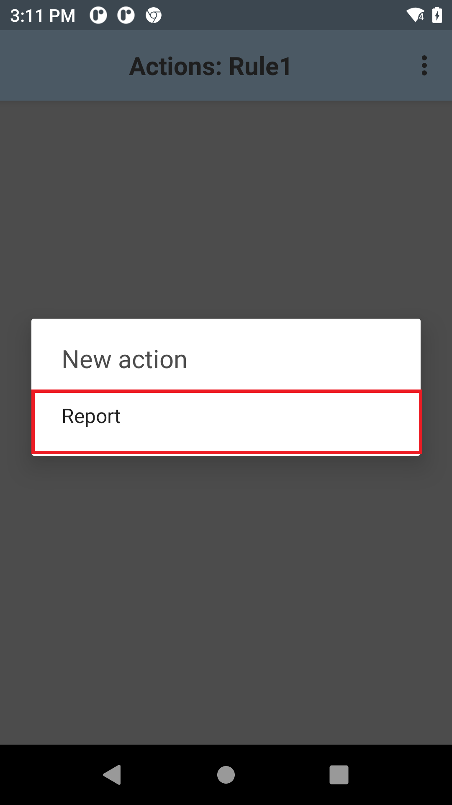
The Report action is listed.
Decoder Selection
Many input methods include parameters that are configurable according to the expected scan targets and/or preferences of an organization. Enabling a narrow selection of decoders can help increase security, reduce decode errors and improve scan performance. For example, a company that routinely receives packages encoded with Code 128 symbology might consider limiting the Code 128 decoders it implements to those of the non-EAN variety.
Parameters for individual Decoders are modified within a Profile. Each DataWedge Profile can be assigned a unique group of Decoders and Decoder parameters (where applicable) to use with its associated application(s). This guide covers the selection of Decoders and provides details for those with configurable parameters.
See Decoders for supported decoders and decoder parameters.
Default Decoders
DataWedge decodes all major barcode symbologies. Popular formats are enabled by default in all DataWedge Profiles (indicated by an *). To improve scanning performance, Zebra recommends disabling all Decoders not required by the app(s) associated with a given Profile.
Note:
- Decoders lacking configurable parameters do not appear in the Decoder Parameters section. Others are linked to their corresponding parameter descriptions.
- Only "Australian Postal" or "Canadian Postal" should be selected as a decoder, not both. If both are simultaneously selected as decoders, only "Canadian Postal" barcodes are decoded.
Australian Postal |
Aztec* |
Canadian Postal |
Chinese 2of5 |
||
Code 32* |
||
Datamatrix* |
||
EAN-8* |
||
EAN-13* |
Finnish Postal 4S |
GS1 DataBar |
GS1 DataBar Limited |
GS1 DataBar Expanded |
|
Japanese Postal |
||
MacroPDF* |
MAILMARK |
|
Maxicode* |
MICR E13B |
|
MicroQR |
MacroMicroPDF* |
|
PDF417* |
||
QR Code* |
TLC 39* |
|
US Currency |
||
US Postal |
UPC-A* |
|
US4state FICS |
US4state |
* Enabled by default
Note: Hyperlinked decoders indicate (and link to) configurable parameters.
Enable/Disable Decoders
To enable or disable Decoders:
1. From the Profile being edited, tap Configure scanner settings then tap Decoders as highlighted below.
A list of Decoders appears similar to the image in Step 2.

2. Select/deselect the desired Decoders by checking/unchecking the corresponding checkbox.
Note: Reducing nonessential Decoders can improve scanning performance.

Edit Decoder Parameters
To edit Decoder parameters:
1. From the Profile being edited, tap Decoders.
A list of Decoders appears similar to the image in Step 2, below.

2. From the Decoder list, tap a decoder to edit its parameters.
If a decoder has no parameters, a checkbox is displayed to enable/disable the decoder.

Decoder Parameters
Editable parameters of individual Decoders are explained below. Note: Decoders lacking configurable parameters do not appear in the Decoder Parameters section below. For further instructions about creating and editing DataWedge Profiles, see "Manage Profiles" guide.
See Decoders for supported decoders and decoder parameters.
Reduced Quiet Zone
The quiet zone is the blank space on either side of a bar code that indicates where the symbology begins and ends, and is intended to prevent the reader from scanning irrelevant information. When marginless decoders are used with Reduced Quiet Zone Level reader parameters, the decoders behave according to the following table:
 Descriptions of the 1D Quiet Zone Levels shown above are in the Reader Params section along with important warnings.
Descriptions of the 1D Quiet Zone Levels shown above are in the Reader Params section along with important warnings.
UPC/EAN Params
The UPC/EAN Parameter allows configuration of parameters that apply to more than one UPC or EAN decoder.

Convert DataBar to UPC EAN - If enabled, converts DataBar barcodes to UPC/EAN/JAN format. For this setting to work UPC/EAN/JAN symbologies must be enabled. This parameter only applies to GS1 DataBar Omnidirectional and GS1 DataBar Limited barcodes not decoded as part of a Composite barcode. It strips the leading '010' from DataBar-14 and DataBar Limited barcodes encoding a single zero as the first digit, and it reports the barcode as EAN-13. For barcodes that begin between two and five zeros, it strips the leading '0100' and reports the barcode as UPC-A. The UPC-A Preamble option that transmits the system character and country code applies to converted barcodes. Note that neither the system character nor the check digit can be stripped.
UPC Reduced Quiet Zone - Enable/Disable decoding UPC barcodes with reduced quiet zones, the area in front of and at the end of a barcode. Enabling this option increases the aggressiveness in decoding barcodes, resulting to increased decoding time and risk of misdecodes.
Bookland - When enabled, select a Bookland Format from the list below.
Bookland Format - When Bookland is enabled, it allows the the following selections for Bookland data:
Format ISBN-10 - The scanner reports Bookland data starting with 978 in traditional 10-digit format with the special Bookland check digit for backward-compatibility. Data starting with 979 is not considered Bookland in this mode.
Format ISBN-13 - The scanner reports Bookland data (starting with either 978 or 979) as EAN-13 in 13-digit format to meet the 2007 ISBN-13 protocol.
Coupon - Enable/Disable Coupon code decoding. UPC-A, EAN-13, and GS1-128 must be enabled to use this feature. When enabled, UPC-A barcodes starting with digit ‘5’, EAN-13 barcodes starting with digit ‘99’, and UPC-A/GS1-128 coupon codes are decoded.
Coupon Report Mode - Traditional coupon symbols are composed of two barcodes: UPC/EAN/JAN and Code 128. A new coupon symbol is composed of a single Data Expanded barcode. The new format offers more options for purchase values (up to $999.999) and supports complex discount offers as a second purchase requirement. An interim coupon symbol also exists that contain both types of barcodes: UPC/EAN/JAN and Databar Expanded. This format accommodates both retailers that do not recognize or use the additional information included in the new coupon symbol, as well as those who can process new coupon symbols.
- Old Coupon Report Mode - Reports both UPC-A/Code-128 and EAN-13/Code-128.
- New Coupon Report Mode - Scanning an interim format reports UPC-A/GS1-DataBar and EAN-13/GS1-DataBar.
- Both Coupon Report Modes - Reports both Old Coupon Format and New Coupon Format.
EAN Zero Extend - If enabled, adds five leading zeros to decoded EAN-8 barcodes to make them compatible in length to EAN-13 barcodes.
Linear Decode - Enables the linear decode property.
Retry Count - Retry count for auto-discriminating UPC/EAN/JAN supplementals, adjusting the number of times to decode a barcode without supplementals before transmission. The value range is 2 to 20; default value is 10. Zebra recommends a value of 5 or above when decoding a mix of UPC/EAN/JAN barcodes with and without supplementals. Supplemental Mode must be set to one of the following: Supplementals Auto, Supplementals Smart, Supplementals 378-379, Supplementals 978-979, Supplementals 977 or Supplementals 414-419-434-439 (2 to 20).
Security Level - The scanner offers four levels of decode security for UPC/EAN/JAN barcodes. As the quality of barcodes decreases, implementing an increased level of security will compensate and help improve decoding success. There is an inverse relationship between scanner aggressiveness and security. Zebra recommends choosing carefully the level of security necessary for any given application:
Level 0 - This setting allows the scanner to operate fastest, while providing sufficient security in decoding "in-spec" UPC/EAN/JAN barcodes.
Level 1 - As barcode quality levels diminish, certain characters become prone to decode failures before others (i.e., 1, 2, 7, 8). If the scanner is decode failures poorly printed barcodes, and the decode failures are limited to these characters, select this security level.
Level 2 - If the scanner fails to decode poorly printed barcodes, and the decode failures are not limited to characters 1, 2, 7, and 8, select this security level.
Level 3 - If the scanner is still fails to decode, select this security level. Be advised, selecting this option is an extreme measure against decode failures for severely out-of-spec barcodes. Selecting this level of security can significantly impair the decoding ability of the scanner. If this level of security is required, try to improve the quality of the barcodes.
Supplemental2 - Enable/disable length 2 supplementals.
Supplemental5 - Enable/disable length 5 supplementals.
Supplemental Mode - Select one of the following:
No Supplementals - The scanner decodes only UPC/EAN/JAN and ignores supplemental characters.
Supplemental Always - The scanner decodes only UPC/EAN/JAN symbols with supplemental characters, and ignores barcodes without supplementals.
Supplemental Auto - The scanner decodes UPC/EAN/JAN symbols with supplemental characters immediately. If the symbol does not have a supplemental, the scanner must decode the barcode the number of times set via UPC/EAN/JAN Supplemental Redundancy before transmitting its data to confirm that there is no supplemental.
Supplemental Smart - Enables smart supplementals. In this mode, the decoder returns the decoded value of the main block immediately unless it belongs to one of the following supplemental types:
◦ 378
◦ 379
◦ 977
◦ 978
◦ 979
◦ 414
◦ 419
◦ 434
◦ 439If the barcode is preceded by one of the prefixes above, the image is searched more aggressively for a supplemental and attempts to scan it. If the supplemental scanning fails, only the main barcode is returned.
Supplemental 378-379 - Enables (auto-discriminate) supplemental for UPC/EAN/JAN codes starting with 378 or 379. Disables reading of supplementals for any other UPC/EAN/JAN barcode not starting with 378 or 379. Tries to scan the supplemental if present. If the supplemental scanning fails, only the main barcode is returned.
Supplemental 978-979 - Enables (auto-discriminate) supplemental for UPC/EAN/JAN codes starting with 978 or 979. Disables reading of supplementals for another UPC/EAN/JAN barcode not starting with 978 or 979. Tries to scan the supplemental if present. If the supplemental scanning fails, only then the main barcode is returned.
Supplemental 414-419-434-439 - Enables (auto-discriminate) supplemental for UPC/EAN/JAN codes starting with 414, 419, 434 or 439. Disables reading of supplementals for another UPC/EAN/JAN barcode not starting with 414, 419, 434 or 439. Tries to scan the supplemental if present. If the supplemental scanning fails, only the main barcode is returned.
Supplemental 977 - Enables (auto-discriminate) supplemental for UPC/EAN/JAN codes starting with 977. Disables reading of supplementals for another UPC/EAN/JAN barcode not starting with 977. Tries to scan the supplemental if present. If the supplemental scanning fails, only the main barcode is returned.
Reader Params
Reader Parameters control specific configuration options for the barcode reader selected in the Profile being edited. Not all parameters will apply to all readers.
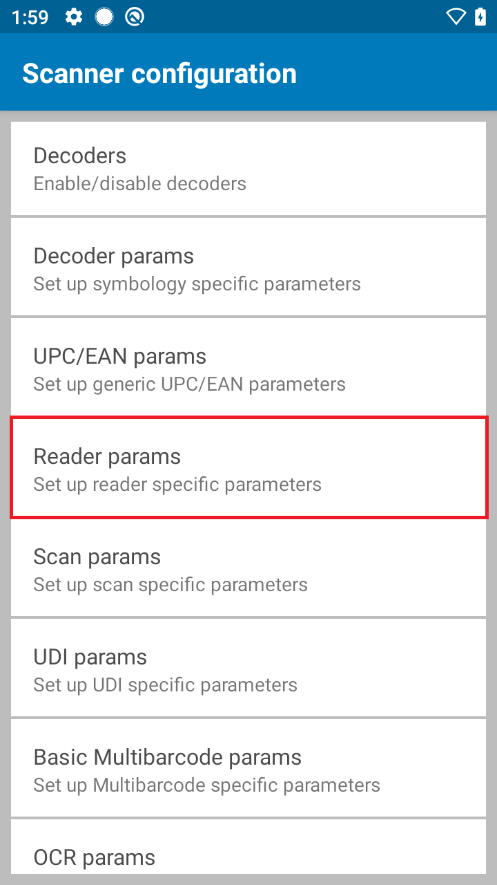
Character Set Configuration - See Character Set Configuration.
Presentation mode parameters - Sets the sensitivity level in reaction to movement within the scanner field of view during the scanning session to automatically activate the scanner when movement is detected. Used when Presentation Mode is selected for Aim Type.
Note: The DS3678 external scanner supports Presentation Mode on all platforms except SD660. For more information about Zebra devices by platform, visit Zebra Platform Devices.
- Sensitivity - Sets the sensitivity level.
- High - Scanning is activated with high sensivity to movement in the scanner field of view (default). Any slight movement in the field of view can activate the scanner.
- Medium - Scanning is activated with medium sensivity to movement in the scanner field of view.
- Low - Scanning is activated with low sensivity to movement in the scanner field of view. Fast movement in the field of view does not activate the scanner.
Advanced Scan Engine Settings - See Advanced Scan Engine Settings.
1D Quiet Zone Level - Sets the effort at which the decoder will attempt to decode "marginless" barcodes. Behavior of these levels will vary based on the marginless decoder selected. See the Reduced Quiet Zone table for behaviors:
- Level 0 - The decoder will perform margin decoding as usual.
- Level 1 - The decoder will perform more aggressively.
- Level 2 - The decoder requires only one side end of barcode.
- Level 3 - The decoder can decode anything.
Note: Higher marginless levels will increase decoding times and the risk of decoding errors. Zebra recommends enabling only the symbologies that require a higher marginless level and leaving all other symbologies at the default level of 1.
Adaptive Scanning - Enables or disables adaptive scanning. When enabled, the scan engine automatically toggles between 2 scan angles, wide and narrow, allowing the scan engine to decode barcodes based on the distance. This is only supported on devices with SE965 scan engines, such as MC3300 and MC9300.
Aim Mode - Turns aim pattern on and off.
Aim Timer - Sets the duration (in ms) for timed aim modes. Supports a range from 0 - 60,000 ms in increments of 100 ms.
Aim Type - Permits selection of reader behavior when the trigger is pressed:
- Trigger - For each trigger press, a single barcode can be scanned.
- Timed Continuous - The proximity sensor detects for an object to be moved within the field of view. When an object is detected, it activates the scan engine to operate in continuous mode. Any barcode detected within its field of view is decoded. The scan engine continues to operate in continuous mode, even after decode or removal of the object from the field of view, until the Timed Continuous Beam Timer (see setting below) is reached. If no decode occurs within the configured timeout, the scan engine shuts off and the proximity sensor becomes active, detecting for another object to be seen within the field of view.
- Timed Hold – Once trigger is pressed, an aiming session is started for a time specified by Aim Timer. When this time expires, a decode session is started and scan beam will be visible. The decode session will remain active until the Beam Timer expires, the trigger is released or a barcode is decoded.
- Timed Release - Once the trigger is pressed, an aiming session is started and will continue until the trigger is released. If the Aim Timer is expired when the trigger is released, a decode session will be started with scan beam visible for a remaining time equal to Beam Timer or a barcode is decoded.
- Press and Release - The scan beam starts when the trigger is pressed and released. The decode session will remain active until the Beam Timer expires or a barcode is decoded.
- Presentation - Automatically activates the scanner and starts scanning immediately when a barcode is presented in its field of view, without any trigger press.
- Continuous Read - A press and hold of the scan trigger continuously scans barcodes. Scanning stops upon releasing the trigger or when the scanner beam times out. The same barcode can be scanned multiple times. If scanning with the use of intents, for example with the soft scan trigger, START_SCANNING intent starts continuous scanning until STOP_SCANNING intent is received or until the scanner beam times out. Not supported with the Zebra RS507 Bluetooth Ring Scanner.
- Press and Sustain - Starts the scan beam when the trigger is pressed and continues the decode session until the Beam Timer is expired, barcode is decoded or read is canceled. Scan beam is not stopped when the trigger is released. This avoids unexpected cancellations of a read by subsequently pressing the trigger button of the device; subsequent trigger presses while the beam is ON have no effect. Applies to internal imager on TC20/TC25 and RS6000/RS507 Bluetooth scanners connected to TC57/TC77 and PS20 devices.
- Press and Continue - The scan beam starts when the trigger is pressed. A subsequent trigger hold or release keeps the decode session active until the beam timer expires or the next trigger press and release. This avoids early wear of the trigger button and minimizes the user effort to press and hold the hard trigger button during a decode session.
DPM Illumination Control - Controls illumination for DPM barcodes:
- Direct Illumination - Scanner uses only direct (white) illumination. Recommended for use with dot peen barcodes - tilt the part 30 degrees for optimal decoding.
- Indirect Illumination - Scanner uses only red illumination. Recommended for use with laser etched barcodes on cylinders or curved, rough, grainy, highly reflective, or visibly machined surfaces.
- Cycle Illumination - Scanner cycles alternately between direct and indirect illumination. The scanner starts with the illumination used during the last successful decode.
DPM Mode - Mode to optimize DPM barcode decoding performance based on barcode size (Default value is Mode 2):
- Disabled - No special processing.
- DPM Mode 1 - Optimizes decoding performance for smaller DPM barcodes, typically found on electronics and medical instruments, especially on smooth surfaces. These barcodes tend to be laser etched or direct printed.
- DPM Mode 2 - Optimizes decoding performance for larger DPM barcodes, typically found on industrial parts, especially on rough, grainy or visibly machined surface. These barcodes tend to be dot peen or laser etched.
Illumination Brightness - Adjusts the brightness for the scanning session. Integer values: 0 - 10.
- Low (0) - Low intensity illumination during scanning session.
- High (10) - Maximum intensity illumination during scanning session (default).
Illumination mode - Turns illumination on and off.
Inverse 1D Mode - Permits option selection for inverse 1D barcode decoding:
- Disabled - Disables decoding of inverse 1D symbologies.
- Enabled - Enables decoding of inverse 1D symbologies only.
- Auto - Automatically detects and decodes positive and inverse 1D symbologies.
LCD Mode - Used to Enable/Disable LCD Mode, which enhances the ability of the imager to read barcodes from LCD displays such as cellphones (applies to Scan Module only). Use of LCD mode might lead to performance degradation and a blinking reticle prior to decoding.
Linear Security Level - Sets the number of times a barcode is read to confirm an accurate decode:
- Security Redundancy and Length - Two times read redundancy based on redundancy flags and code length.
- Security Short or Codabar - Two times read redundancy if short barcode or Codabar.
- Security All Twice - Two times read redundancy for all barcodes.
- Security Long and Short - Two times read redundancy for long barcodes, three times for short barcodes.
- Security All Thrice - Three times read redundancy for all barcodes.
HW Engine Low Power Timeout - Time (in ms) of inactivity before scanner enters low-power mode.
Picklist - Permits selection of Picklist mode, which instructs the imager to decode only the barcode directly under the cross-hair/reticle in the preview screen. This feature is most useful for applications in which multiple barcodes may appear in the field of view during a decode session but only one is desired for decoding.
- Disable - Disables Picklist mode; any barcode within the field of view can be decoded.
- Hardware Picklist - Picklist mode is enabled by sending a command to hardware. 8y6
- Software Picklist - Picklist feature is handled in the software; no commands are sent to hardware.
Notes:
- Performance might vary on some devices if Hardware or Software Picklist modes are set.
- If using MultiBarcode mode, see important behavior notes below.
Poor Quality Decode Effort - Permits selection of enhancement modes for decoding barcodes of poor or degraded quality. Available options:
- Effort Level 0 - Decoding performance on regular 1D and 2D barcodes is not affected.
- Effort Level 1 - The scanner performance on regular 2D barcodes is impacted while decoding performance on Tesco Thailand barcode and Suppository barcode is improved.
- Effort Level 2 - same as Level 1.
- Effort Level 3 - same as Level 1.
Note: Same performance from Effort Level 1 to Effort Level 3.
Beam Timer - Sets the maximum amount of time (in ms) that the reader remains on. Supports a range from 0 - 60,000 ms in increments of 100 ms. A value of 0 sets the reader to stay on indefinitely.
Timed Continuous Beam Timer - (Related to Timed Continuous Aim Type.) Sets the amount of time (in ms) for the scanning session to remain active before timing out. Supports a range from 0 - 180,000 ms in increments of 1000 ms. A value of 0 sets the reader in continuous mode, remaining on indefinitely.
Different Symbol Timeout - Used to prevent the scanner from decoding another symbol within a specified time interval (applicable only when Aim Type is set to Continuous Read). A value of 0 indicates that no interval is required between two successive reads.
Same Symbol Timeout - Used to prevent the scanner from decoding the same symbol within a specified time interval (applicable only when Aim Type is set to Continuous Read). A value of 0 indicates that no interval is required between two successive reads.
• Barcode Decode (Default) - Enables the scanner to decode barcodes by default when connected via SNAPI, providing standard functionality for Zebra USB Scanners.
• Image Capture - Allows the scanner to capture images, a capability available only in SNAPI mode and supported by Zebra USB Scanners (SNAPI) with 2D imaging capabilities.
For SNAPI Capture Mode, the Zebra USB Scanner must be configured as follows:
- Connect the Scanner - Connect the Zebra USB Scanner to a Zebra Android device via any USB port.
- Switch to SNAPI Mode -Scan the SNAPI barcode to change the scanner's mode; the scanner will then automatically restart in SNAPI mode.
Trigger Wakeup and Scan - Used to trigger scanning when a device is in a suspended/screen-off state. User needs to set the scanner trigger button as a wakeup source. When a user presses the trigger button in a suspend/screen-off state, scanning starts when the user keeps the trigger pressed.
Minimum Scan Interval - Specifies the duration to prevent the scan beam from being emitted when a scan is initiated (either via hardware or soft scan trigger). This helps avoid unintended scans or decodes. Parameter values: 0 - 10000 ms, default = 0 ms.
Digimarc Decoding - Used to enable/disable support for Digimarc, which encodes and invisibly integrates traditional barcode data onto product packaging. Supported with internal imager and rear camera. Enabled by default. More about Digimarc.
Viewfinder Mode - Permits selection of supported Viewfinder modes:
- Viewfinder Enabled - Enables only the viewfinder.
- Static Reticle - Enables the viewfinder and a red reticle (cross-hairs) in the center of the screen to aid in positioning the barcode for scanning. This parameter is supported only when the Camera is used for scanning.
Zoom - Required for decoding DotCode barcodes. User needs to set Camera Zoom value to 2 on the following devices: MC33, TC51/TC56, TC70x/TC75x, VC80x, TC52/TC57, TC72/TC77, PS20. If Camera Zoom is set to any value other than 2 on these devices, it can negatively impact the decoding of specific DotCode barcodes. Parameter values: 1 - 8. Default=1.
Keep Pairing Info After Reboot - Enable/disable automatic re-connection to the connected Bluetooth scanner after device reboot. Applies only to connected Bluetooth scanners.
See Important notes below.
Character Set Configuration
Provides options to make adjustments with the decoder character set. These options are:
- Character Set Selection
- Auto Character Set Preferred Order
- Auto Character Set Failure Option

Character Set Selection - Converts the barcode data to the specified encoding type if different from the default encoding type, UTF-8. Other options are: Auto Character Set Selection, ISO-8859-1, Shift_JIS and GB18030.

- Auto Character Set Selection (Best Effort) - Decodes data in the preference order of character sets specified in the "Auto Character Set Preferred Order" list. If the data cannot be decoded based on the character sets listed, "Auto Character Set Failure Option" takes into effect. See description for each respective option for more details.
Auto Character Set Preferred Order - If "Auto Character Set Selection (Best Effort)" is selected, data is decoded in the specified preference order of the supported character sets listed: UTF-8 and GB2312. This is useful in cases where data can be decoded from more than one character set. The first character set listed which can decode the data successfully is chosen to decode the data - any other character set located lower in the list is not considered, even if the data could be successfully decoded using that character set. If DataWedge cannot find a character set from the preferred list to decode the data successfully, the character set selected in "Auto Character Set Failure Option" is used to decode the data.
Both the preferred character set list and its preference order is configurable. The order is rearranged by dragging the “hamburger-like” icon of the character set into the desired position. To delete a character set, long press on the item and the “Delete” option appears. To add a new character set, tap the “hamburger” menu at the top right corner - an option to add a character set, such as UTF-8 and GB2312, appears.

Auto Character Set Failure Option - Used to decode data if the device cannot successfully decode based on the character sets listed in the "Auto Character Set Preferred Order" list. If “None” is selected, “Null” is returned as the data string.
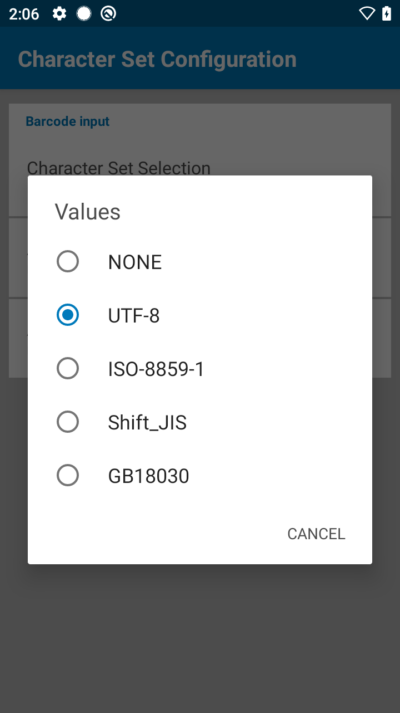
Advanced Scan Engine Settings
Advanced Scan Engine Settings enhance scanning performance by allowing users to adjust the priority focus range. This feature improves efficiency and customization, enabling users to adapt settings to their specific requirements. A warning popup serves as an indicator to learn more about this setting.
IMPORTANT: The Advanced Scan Engine Settings feature exclusively applies to the SE5500 scan engine. It is only visible if the device detects the presence of the SE5500 scan engine.
| Advanced Scan Engine Settings and its options | ||||||
Priority Focus Mode - select the following options:
Starting Focus Point - When the target crosshair is not easily visible on the barcode for scanning, choose the option that corresponds to the typical distance between the scanner and barcode. This improves scanning performance by optimizing focus based on the specified range. This can be particularly useful for barcodes located in hard-to-reach places, such as high up or on a column.
- None(Default) - The scanner engine utilizes a built-in algorithm to adjust focus.
- Close - The focus initiates at less than half a foot away.
- Short - The focus initiates at about one foot away.
- Mid - The focus initiates at a distance of one to two feet.
- Long - The focus initiates at about three feet away.
- Extra Long - The focus initiates beyond a distance of four feet.
Outdoor Starting Focus Point - When scanning barcodes in direct sunlight or from a reflective surface, choose the option that corresponds to the typical distance between the scanner and barcode. This improves scanning performance by optimizing focus based on the specified range.
- None(Default) - The scanner engine utilizes a built-in algorithm to adjust focus.
- Close - The focus initiates at less than half a foot away.
- Short - The focus initiates at about one foot away.
- Mid - The focus initiates at a distnce of one to two feet.
- Long - The focus initiates at about three feet away.
- Extra Long - The focus initiates beyond a distance of four feet.
Scan Params
Scan Parameters allow for configuration of Code ID and scanner-specific decoding feedback options for the scanner selected in the Profile being edited.
Note: Some parameters are device-dependent.
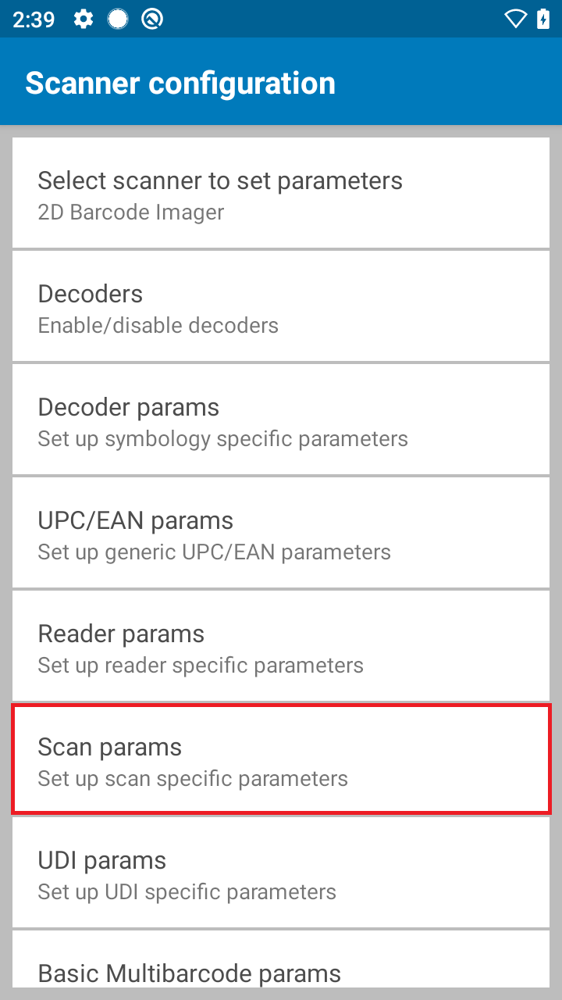
Code ID Type - Permits the selection of a Code ID character to insert between the prefix and the decoded symbol. The Code ID character identifies the code type of a scanned barcode. This information can be useful to an application when multiple barcode types are being read. Available options:
Code ID Type None - Insert no prefix.
Code ID Type Aim - Inserts a standards-based three-character prefix.
Code ID Type Symbol - Inserts a Zebra-defined single-character prefix.
Connection Idle Time - Specifies the length of time (in seconds) for a peripheral Bluetooth scanner to remain connected until transitioning to standby mode to conserve battery power.
Decode Haptic Feedback - Enable the mobile computer to vibrate to indicate a successful decode. For Android 13 devices, Touch Feedback must be enabled in Vibration & haptics under device Settings in order for Decode Haptic Feedback to function.
Display BT Address Barcode - When enabled (default) and the selected Bluetooth scanner is being accessed while it is not connected to the mobile computer, the Bluetooth address of the mobile computer is displayed through the Bluetooth Pairing Utility for the user to scan and pair with the Bluetooth scanner. Disable this option to prevent the Bluetooth address from being displayed.
Decode Audio Feedback - Select an audio tone to play to indicate a successful decode.
Decode Screen Notification - When enabled, a translucent green screen overlay appears for 1 second upon every successful decode.
Decode Screen Notification Timer - Defines the length of time (in milliseconds) to display the screen notification upon successful decode. Timer configuration range is 500 ms to 1500 ms. Default time is 1000 ms.
Decode Screen Translucency Level - Sets the translucency of the decode notification green screen. Translucency level range is 20 to 50, in increments of 5. The higher the value, the more the translucency (visibility).
Decoding LED Notification - When enabled, causes the Red LED to flash when the scan trigger is pressed.
Decode Feedback LED Timer - Defines the length of time (in ms) to flash the Green LED to indicate a successful decode.
Beep Volume Channel - Permits selection of the volume setting to be used when playing the Decode Audio Feedback. Available options:
Ringer - Uses Ringer volume setting for audio feedback.
Music and Media - Uses Music and Media volume setting for audio feedback.
Alarms - Uses the Alarms volume setting for audio feedback.
Notification - Uses Notification volume setting for audio feedback.
Note: Not all ringtones are supported as decode tones; some ringtones might be truncated when used as a decode tone. Zebra recommends testing all selected tones before deployment.
Ignore ZVC Volume Level - When enabled, allows the user to prioritize the Beep Volume Channel over the Zebra Volume Control (ZVC) volume level. ZVC is a user interface component that simplifies the adjustment of various audio stream volumes on the device. For more information on ZVC, refer to Audio Volume UI Manager. When disabled (default setting), the scanner's audio feedback is based on the ZVC volume level.
Important: Support for decode parameters can vary depending on the scanning device selected. For device-specific support notes, please refer to the Integrator Guide that accompanied the unit.
UDI Params
The Universal Device Identifier (UDI) parameter acquires multiple barcodes simultaneously.
Support for UDI barcodes has been restored to Zebra devices running Android 10 with BSP 10.12.13 "Update 17" (or later).
Tap Scanning Modes within Scanner Configuration to enable UDI decoding:
When UDI scanning mode is enabled (as above)...
 ...the selected UDI input parameter(s) will be used.
...the selected UDI input parameter(s) will be used.
UDI Decoding Notes:
- Output of collected UDI data might require settings adjustments of the token-separation character and/or output order. See the Keystroke Output guide guide for more information.
- UDI settings can vary by geographic region. See the relevant sections of Keystroke Output, Intent Output and/or IP Output guides for more information.
- Blood bags with barcodes that follow the ICCBBA standard can be decoded with UDI.
OCR Params (OCR-A/OCR-B)
Optical character recognition (OCR) allows digital text to be extracted from images. OCR Params applies to OCR A and/or OCR B decoders, when enabled. OCR A and OCR B only supports upper case letters, not lower case letters. OCR decoding is not as secure as barcode. To decrease OCR misdecodes and speed OCR reading, set an accurate OCR template and character subset, and use a check digit. Enabling OCR can slow barcode decoding. Enabling more than one OCR font could also slow OCR decoding and impact OCR decoding accuracy.
OCR is supported on all Zebra SD660 platform devices with built-in imagers (such as TC52, TC57, TC72, and TC77). OCR is not supported on camera-only devices, Bluetooth scanners, SE965-based devices (such as MC3300 and MC9300), Zebra Scanner Expansion Back (ZBack) nor ET51 with integrated scanner. For more information on Zebra devices based on platform, see Zebra Platform Devices.
Inverse OCR - White or light words on a black or dark background. Select an option for decoding inverse OCR:
- Regular Only - Decode regular OCR (black on white) strings only.
- Inverse Only - Decode inverse OCR (white on black) strings only.
- Auto-discriminate - Decode both regular and inverse OCR strings.
OCR Check Digit Modulus - Sets the OCR module check digit calculation. The check digit is the last digit (in the right most position) in an OCR string and improves the accuracy of the collected data. The check digit is the end product of a calculation made on the incoming data. For check digit calculation, for example Modulus 10, alpha and numeric characters are assigned numeric weights. The calculation is applied to the character weights and the resulting check digit is added to the end of the data. If the incoming data does not match the check digit, the data is considered corrupt. The selected check digit option does not take effect until you set OCR Check Digit Validation.
OCR Check Digit Multiplier - Sets OCR check digit multipliers for the character positions. For check digit validation, each character in scanned data has an equivalent weight used in the check digit calculation.
OCR Check Digit Validation - Protects against scanning errors by applying a check digit validation scheme. Options:
- None - 0 (default)
- Product Add Left to Right - Each character in the scanned data is assigned a numeric value. Each digit representing a character in the scanned data is multiplied by its corresponding digit in the multiplier, and the sum of these products is computed. The check digit passes if this sum modulo Check Digit Modulus is zero.
Example: Scanned data numeric value is 132456 (check digit is 6). Check digit multiplier string is 123456
Digit 1 3 2 4 5 6
Multiplier 1 2 3 4 5 6
Product 1 6 6 16 25 36
Product add 1+ 6+ 6+ 16+ 25+ 36 = 90
If the Check Digit Modulus is 10, it passes because 90 is divisible by 10 (the remainder is zero). - Product Add Right to Left - Each character in the scanned data is assigned a numeric value.
The check digit multiplier is reversed in order. Each value representing a character in the scanned data is multiplied by its corresponding digit in the reversed multiplier, resulting in a product for each character in the scanned data. The sum of these products is computed. The check digit passes if this sum modulo Check Digit Modulus is zero.
Example: Scanned data numeric value is 132459 (check digit is 9). Check digit multiplier string is 123456.
Digit 1 3 2 4 5 9
Multiplier 6 5 4 3 2 1
Product 6 15 8 12 10 9
Product add 6+ 15+ 8+ 12+ 10+ 9 = 60
If the Check Digit Modulus is 10, it passes because 60 is divisible by 10 (the remainder is 0). - Digit Add Left to Right - Each character in the scanned data is assigned a numeric value.
Each value representing a character in the scanned data is multiplied by its corresponding digit in the multiplier, resulting in a product for each character in the scanned data. The sum of each individual digit in all of the products is then calculated. The check digit passes if this sum modulo Check Digit Modulus is zero.
Example: Scanned data numeric value is 132456 (check digit is 6). Check digit multiplier string is 123456.
Digit 1 3 2 4 5 6
Multiplier 1 2 3 4 5 6
Product 1 6 6 16 25 36
Digit add 1+ 6+ 6+ 1+6+ 2+5+ 3+6 = 36
If the Check Digit Modulus is 12, it passes because 36 is divisible by 12 (the remainder is 0). - Digit Add Right to Left - Each character in the scanned data is assigned a numeric value.
The check digit multiplier is reversed in order. Each value representing a character in the scanned data is multiplied by its corresponding digit in the reversed multiplier, resulting in a product for each character in the scanned data. The sum of each individual digit in all of the products is then calculated. The check digit passes if this sum modulo Check Digit Modulus is zero.
Example: Scanned data numeric value is 132456 (check digit is 6). Check digit multiplier string is 123456.
Digit 1 3 2 4 5 6
Multiplier 6 5 4 3 2 1
Product 6 15 8 12 10 6
Digit add 6+ 1+5+ 8+ 1+2+ 1+0+ 6 = 30
The Check Digit Modulus is 10. It passes because 30 is divisible by 10 (the remainder is 0). - Product Add Right to Left Simple Remainder - Each character in the scanned data is assigned a numeric value. The check digit multiplier is reversed in order. Each value representing a character in the scanned data is multiplied by its corresponding digit in the reversed multiplier, resulting in a product for each character in the scanned data. The sum of these products except for the check digit's product is computed. The check digit passes if this sum modulo Check Digit Modulus is equal to the check digit's product.
Example: Scanned data numeric value is 122456 (check digit is 6). Check digit multiplier string is 123456.
Digit 1 2 2 4 5 6
Multiplier 6 5 4 3 2 1
Product 6 10 8 12 10 6
Product add 6+ 10+ 8+ 12+ 10 = 46 6
The Check Digit Modulus is 10. It passes because 46 divided by 10 leaves a remainder of 6. - Digit Add Right to Left Simple Remainder - Each character in the scanned data is assigned a numeric value. The check digit multiplier is reversed in order. Each value representing a character in the scanned data is multiplied by its corresponding digit in the reversed multiplier, resulting in a product for each character in the scanned data. The sum of each individual digit in all of the products except for the check digit's product is then calculated. The check digit passes if this sum modulo Check Digit Modulus is equal to the check digit's product.
Example: Scanned data numeric value is 122459 (check digit is 6). Check digit multiplier string is 123456.
Digit 1 2 2 4 5 9
Multiplier 6 5 4 3 2 1
Product 6 10 8 12 10 9
Digit add 6+ 1+0+ 8+ 1+2+ 1+0+ = 19 9
The Check Digit Modulus is 10. It passes because 19 divided by 10 leaves a remainder of 9. - Health Industry - HIBCC43 - The health industry module 43 check digit standard. The check digit is the modulus 43 sum of all the character values in a given message, and is printed as the last character in a given message.
OCR Lines - Select the number of OCR lines to decode:
- 1 Line
- 2 Line
- 3 Line
OCR Maximum Characters - Select the maximum number of OCR characters (including spaces) per line to decode.
OCR Minimum Characters - Select the minimum number of OCR characters (not including spaces) per line to decode.
OCR Orientation - Select the orientation of an OCR string to be read. Setting an incorrect orientation can cause mis-decodes. Options:
- 0 degree - to the imaging engine (default)
- 270 degree - clockwise (or 90o counterclockwise) to the imaging engine
- 180 degree - (upside down) to the imaging engine
- 90 degree - clockwise to the imaging engine
- Omnidirectional
OCR Quiet Zone - Sets the field width of blank space to stop scanning during OCR reading.
OCR Subset - Defines a custom group of characters in place of a preset font variant. For example, if scanning only numbers and the letters A, B, and C, create a subset of just these characters to speed decoding. This applies a designated OCR Subset across all enabled OCR fonts.
OCR Template - Creates a template for precisely matching scanned OCR characters to a desired input format, which helps eliminate scanning errors. The template is formed with alpha, numeric and/or special characters. The default is 99999999, which '9' represents a digit for each character. Refer to the table below, where the Template column contains OCR templates consisting of characters that are represented based on the Name column. Each character has a specific representation. Carefully constructing an OCR template eliminates scanning errors.
Minimum length - 3
Maximum Length - 100 (Default - 99999999)
OCR Templates and Options:
| Name | Description | Template | Valid Data/ Incoming Data |
Invalid Data/ Outgoing Data |
|---|---|---|---|---|
| Required Digit (9) | Only a numeric character is allowed in this position. | 99999 | 12987 | 123AB |
| Required Alpha (A) | Only an alpha character is allowed in this position. | AAA | ABC | 12F |
| Require and Suppress (0) | Any character in this position, including space or reject, is suppressed from the output. | 990AA | 12QAB | 12AB |
| Optional Alphanumeric (1) | This option accepts an alphanumeric character if present. Optional characters are not allowed as the first character(s) in a field of like characters. | 99991 | 1234A | 1234< |
| Optional Alpha (2) | This option accepts an alpha character if present. Optional characters are not allowed as the first character(s) in a field of like characters. | AAAA2 | ABCDE | ABCD6 |
| Alpha or Digit (3) | An alphanumeric character is required in this position to validate the incoming data. | 33333 | 12ABC | 12AB< |
| Any Including Space & Reject (4) | Accepts any character in this position, including space and reject. Rejects are represented as an underscore (_) in the output. This is a good selection for troubleshooting. | 99499 | 12$34 34_98 |
|
| Any except Space & Reject (5) | Accepts any character in this position except a space or reject. | 55999 | A.123 *Z456 |
A BCD |
| Optional Digit (7) | Accepts a numeric character if present. Optional characters are not allowed as the first character(s) in a field of like characters. | 99977 | 12345 789 |
789AB |
| Digit or Fill (8) | Accepts any numeric or fill character in this position. | 88899 | 12345 >>789 <<789 |
|
| Alpha or Fill (F) | Accepts any alpha or fill character in this position. | AAAFF | ABCXY LMN>> ABC<5 |
|
| Optional Space ( ) | Accepts a space if present. Optional characters are not allowed as the first characte(s) in a field of like characters. | 99 99 | 12 34 1234 |
67891 |
| Optional Small Special (.) | Accepts a special character if present. Optional characters are not allowed as the first character(s) in a field of like characters. Small special characters are - , and . | AA.99 | MN.35 XY98 |
XYZ12 |
| Other Template Operators - These template operators assist in capturing, delimiting, and formatting scanned OCR data | ||||
| Literal String (" and +) | Use either of these delimiting characters surrounding alphanumeric characters to define a literal string within a template that must be present in scanned OCR data. There are two characters used to delimit required literal strings; if one of the delimiter characters is present in the desired literal string, use the other delimiter. | "35+BC" | 35+BC | AB+22 |
| New Line (E) | To create a template of multiple lines, add E between the template of each single line. | 999EAAAA | 321 BCAD |
XYZW 12 |
| String Extract (C) | This operator combined with others defines a string of characters to extract from the scanned data. The string extract is structured as follows: CbPe Where: • C is the string extract operator • b is the string begin delimiter • P is the category (one or more numeric or alpha characters) describing the string representation • e is the string end delimiter Values for b and e can be any scannable character. They are included in the output stream. |
C>A> | XQ3>ABCDE> ->ATRU>123 |
>ABCDE> >ATRU> |
| Ignore to End of Field (D) | This operator causes all characters after a template to be ignored. Use this as the last character in a template. | 999D | 123-PED 357298 |
123 357 |
| Skip Until (P1) | This operator allows skipping over characters until a specific character type or a literal string is detected. It can be used in two ways: P1ct Where: • P1 is the Skip Until operator • c is the type of character that triggers the start of output • t is one or more template characters P1"s"t Where: • P1 is the Skip Until operator • "s" is one or more literal string characters that trigger the start of output • t is one or more template characters The trigger character or literal string is included in output from a Skip Until operator, and the first character in the template should accommodate this trigger. |
P1"PN"AA9999 | 123PN9876 X-PN3592 |
PN9876 PN3592 |
| Skip Until Not (P0) | This operator allows skipping over characters until a specific character type or a literal string is not matched in the output stream. It can be used in two ways: P0ct Where: • P0 is the Skip Until Not operator • c is the type of character that triggers the start of output • t is one or more template characters P0"s"t Where: • P0 is the Skip Until Not operator • "s" is one or more literal string characters that trigger the start of output • t is one or more template characters The trigger character or literal string is included in output from a Skip Until Not operator. |
P0A9999 | BPN3456 X-PN3592 |
5341 No output |
| Repeat Previous (R) | This operator allows a template character to repeat one or more times, allowing the capture of variable-length scanned data. The following examples capture two required alpha characters followed by one or more required digits: | AA9R | AB3 AB3 32RM52700 |
PN12345 PN12345 No output |
| Scroll Until Match (S) | This operator steps through scanned data one character at a time until the data matches the template. | S99999 | AB3 PN12345 32RM52700 |
No output 12345 52700 |
| Multiple Templates | This feature sets up multiple templates for OCR decoding. For each template in the multiple template string, use a capital letter X as a separator between the templates. For example, set the OCR Template as 99999XAAAAA to decode OCR strings of either 12345 or ABCDE. |
Following are sample templates with descriptions of valid data for each definition. The Field Definition is followed by its description: "M"99977 : M followed by three digits and two optional digits. "X"997777"X" : X followed by two digits, four optional digits, and an X. 9959775599 : Two digits followed by any character, a digit, two optional digits, any two characters, and two digits. A55"-"999"-"99 : A letter followed by two characters, a dash, three digits, a dash, and two digits. 33A"."99 : Two alphanumeric characters followed by a letter, a period, and two digits. 999992991 : Five digits followed by an optional alpha, two digits, and an optional alphanumeric. "PN98" : Literal field - PN98 |
||
Barcode Parsing
GS1 Parsing
GS1 Parsing refers to the process of extracting and interpreting information encoded within GS1 barcodes. which represent various attributes of a product. This typically includes information such as the SSCC (Serial Shipping Container Code), GTIN (Global Trade Item Number), serial number, batch/lot number, and more. The output of the GS1 Parsing data might require settings adjustments of the token-separation character and/or output order. See Keystroke Output for more information.
Behavior notes based on DataWedge options:
- The GS1 Parsing feature is disabled if the scanning mode is UDI or Document Capture.
- When MultiBarcode is enabled, only the first GS1 barcode found is parsed.
- When GS1 Parsing is enabled with QR Launch feature, QR Launch takes priority.
- If multiple identifiers with the same ID are contained in the GS1 data, only 1 of them is be parsed.
- Zebra recommends to add a Key event delay if a token separator is used.
See supported GS1 Application Identifiers.
Enable/Disable GS1 Parsing
Follow these steps to enable/disable GS1 Parsing:
- In DataWedge, open your profile and tap Configure scanner settings or Configure NG scanner settings (if using MultiBarcode) under Barcode Input.
- Scroll down and tap Barcode Parsing.
- Toggle the checkbox to enable GS1 Parsing (disabled by default).
Digital Link Parsing
Digital Link Parsing enables parsing for GS1 Digital Link barcodes. GS1 Digital Link is a global standard for creating web links to access information about a product, location, organization, asset or anything else. It is a URL-based system for encoding information in a way that is easily accessible, shareable, and understandable by both humans and machines.
Parsing GS1 Digital Link involves breaking down the URL into its constituent elements, which represent various attributes of a product. This typically includes information such as the GTIN (Global Trade Item Number), serial number, batch/lot number and more. The output of collected GS1 Digital Link data may require setting adjustments of the token-separation character and/or output order. See Keystroke Output for more information. GS1 Digital Link Parsing supports only primary domains, not subdomains, within the URL.
Example of a Digital Link URL (Note: This is NOT a live link):
https://www.zebra.com//01/09506000134376/10/ZEBRA_LOT/21/985345679654788?17=221231
Behavior Notes:
- The GS1 Digital Link Parsing feature is disabled if the scanning mode is UDI or Document Capture.
- When MultiBarcode is enabled, only the first digital link barcode detected is parsed.
- When GS1 Digital Link Parsing is enabled with the QR Code Launch feature, QR Code Launch takes priority.
- If multiple identifiers with the same ID are contained in the GS1 data, only 1 of them is parsed.
- Zebra recommends to add a Key event delay if a token separator is used.
See supported GS1 Application Identifiers.
Enable/Disable Digital Link Parsing
Follow these steps to enable/disable Digital Link Parsing:
- In DataWedge, open your profile and tap Configure scanner settings or Configure NG SimulScan settings (if using MultiBarcode) under Barcode Input.
- Scroll down and tap Barcode Parsing.
- Toggle the checkbox to enable Digital Link Parsing (disabled by default).
GS1 Application Identifiers (AIs)
DataWedge supports the following GS1 Application Identifiers for parsing:
| Application Identifiers (AIs) |
GS1 Data Title | Regular Expression |
|---|---|---|
| NA | Digital Link Domain | |
| 00 | Serial Shipping Container Code (SSCC) | ^00(\d{18})$ |
| 01 | Device Identifier (GTIN) | ^01(\d{14})$ |
| 02 | Global Trade Item Number (GTIN) of contained trade items (CONTENT) | ^02(\d{14})$ |
| 10 | Batch or lot number (BATCH/LOT) | ^10([\x21-\x22\x25-\x2F\x30-\x39\x3A-\x3F\x41-\x5A\x5F\x61-\x7A]{0,20})$ |
| 11 | Production date (YYMMDD) (PROD DATE) | ^11(\d{6})$ |
| 15 | Best before date (YYMMDD) (BEST BEFORE or BEST BY) | ^15(\d{6})$ |
| 17 | Expiration date (YYMMDD) (USE BY OR EXPIRY) | ^17(\d{6})$ |
| 21 | Serial number (SERIAL) | ^21([\x21-\x22\x25-\x2F\x30-\x39\x3A-\x3F\x41-\x5A\x5F\x61-\x7A]{0,20})$ |
| 30 | Variable count of items (variable measure trade item) (VAR. COUNT) | ^30(\d{0,8})$ |
| 37 | Count of trade items or trade item pieces contained in a logistic unit (COUNT) | ^37(\d{0,8})$ |
| 91 | Company internal information (INTERNAL) | ^91([\x21-\x22\x25-\x2F\x30-\x39\x3A-\x3F\x41-\x5A\x5F\x61-\x7A]{0,90})$ |
| 400 | Customers purchase order number (ORDER NUMBER) | ^400([\x21-\x22\x25-\x2F\x30-\x39\x3A-\x3F\x41-\x5A\x5F\x61-\x7A]{0,30})$ |
| 420 | Ship to / Deliver to postal code within a single postal authority (SHIP TO POST) | ^420([\x21-\x22\x25-\x2F\x30-\x39\x3A-\x3F\x41-\x5A\x5F\x61-\x7A]{0,20})$ |
Related guides: